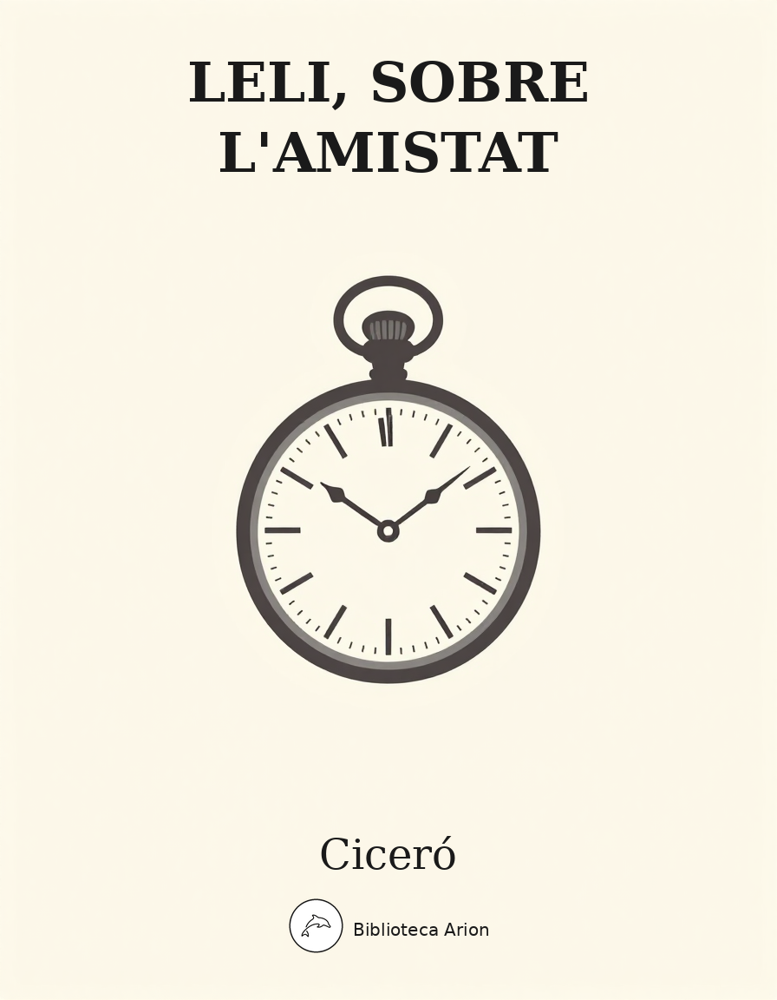

Leli, sobre l'amistat
Laelius de Amicitia
Diàleg filosòfic sobre l'amistat, escrit per Ciceró poc després de la mort del seu amic Escipió l'Africà. Leli, el protagonista, reflexiona sobre la natura, el valor i les condicions de la veritable amistat.
Laelius de Amicitia
Autor: Ciceró Font: wikisource Llengua: llatí
Q. Mucius augur multa narrare de C. Laelio socero suo memoriter et iucunde solebat nec dubitare illum in omni sermone appellare sapientem; ego autem a patre ita eram deductus ad Scaevolam sumpta virili toga, ut, quoad possem et liceret, a senis latere numquam discederem; itaque multa ab eo prudenter disputata, multa etiam breviter et commode dicta memoriae mandabam fierique studebam eius prudentia doctior. Quo mortuo me ad pontificem Scaevolam contuli, quem unum nostrae civitatis et ingenio et iustitia praestantissimum audeo dicere. Sed de hoc alias; nunc redeo ad augurem.
Cum saepe multa, tum memini domi in hemicyclio sedentem, ut solebat, cum et ego essem una et pauci admodum familiares, in eum sermonem illum incidere qui tum forte multis erat in ore. Meministi enim profecto, Attice, et eo magis, quod P. Sulpicio utebare multum, cum is tribunus plebis capitali odio a Q. Pompeio, qui tum erat consul, dissideret, quocum coniunctissime et amantissime vixerat, quanta esset hominum vel admiratio vel querella.
Itaque tum Scaevola cum in eam ipsam mentionem incidisset, exposuit nobis sermonem Laeli de amicitia habitum ab illo secum et cum altero genero, C. Fannio Marci filio, paucis diebus post mortem Africani. Eius disputationis sententias memoriae mandavi, quas hoc libro exposui arbitratu meo; quasi enim ipsos induxi loquentes, ne ‘inquam’ et ‘inquit’ saepius interponeretur, atque ut tamquam a praesentibus coram haberi sermo videretur.
Cum enim saepe mecum ageres ut de amicitia scriberem aliquid, digna mihi res cum omnium cognitione tum nostra familiaritate visa est. Itaque feci non invitus ut prodessem multis rogatu tuo. Sed ut in Catone Maiore, qui est scriptus ad te de senectute, Catonem induxi senem disputantem, quia nulla videbatur aptior persona quae de illa aetate loqueretur quam eius qui et diutissime senex fuisset et in ipsa senectute praeter ceteros floruisset, sic cum accepissemus a patribus maxime memorabilem C. Laeli et P. Scipionis familiaritatem fuisse, idonea mihi Laeli persona visa est quae de amicitia ea ipsa dissereret quae disputata ab eo meminisset Scaevola. Genus autem hoc sermonum positum in hominum veterum auctoritate, et eorum inlustrium, plus nescio quo pacto videtur habere gravitatis; itaque ipse mea legens sic afficior interdum ut Catonem, non me loqui existimem.
Sed ut tum ad senem senex de senectute, sic hoc libro ad amicum amicissimus scripsi de amicitia. Tum est Cato locutus, quo erat nemo fere senior temporibus illis, nemo prudentior; nunc Laelius et sapiens (sic enim est habitus) et amicitiae gloria excellens de amicitia loquetur. Tu velim a me animum parumper avertas, Laelium loqui ipsum putes. C. Fannius et Q. Mucius ad socerum veniunt post mortem Africani; ab his sermo oritur, respondet Laelius, cuius tota disputatio est de amicitia, quam legens te ipse cognosces.
Fannius: Sunt ista, Laeli; nec enim melior vir fuit Africano quisquam nec clarior. Sed existimare debes omnium oculos in te esse coniectos unum; te sapientem et appellant et existimant. Tribuebatur hoc modo M. Catoni; scimus L. Acilium apud patres nostros appellatum esse sapientem; sed uterque alio quodam modo, Acilius, quia prudens esse in iure civili putabatur, Cato, quia multarum rerum usum habebat; multa eius et in senatu et in foro vel provisa prudenter vel acta constanter vel responsa acute ferebantur; propterea quasi cognomen iam habebat in senectute sapientis.
Te autem alio quodam modo non solum natura et moribus, verum etiam studio et doctrina esse sapientem, nec sicut vulgus, sed ut eruditi solent appellare sapientem, qualem in reliqua Graecia neminem (nam qui septem appellantur, eos, qui ista subtilius quaerunt, in numero sapientium non habent), Athenis unum accepimus, et eum quidem etiam Apollinis oraculo sapientissimum iudicatum; hanc esse in te sapientiam existimant, ut omnia tua in te posita esse ducas humanosque casus virtute inferiores putes. Itaque ex me quaerunt, credo ex hoc item Scaevola, quonam pacto mortem Africani feras, eoque magis quod proximis Nonis cum in hortos D. Bruti auguris commentandi causa, ut adsolet, venissemus, tu non adfuisti, qui diligentissime semper illum diem et illud munus solitus esses obire.
Scaevola: Quaerunt quidem, C. Laeli, multi, ut est a Fannio dictum, sed ego id respondeo, quod animum adverti, te dolorem, quem acceperis cum summi viri tum amicissimi morte, ferre moderate nec potuisse non commoveri nec fuisse id humanitatis tuae; quod autem Nonis in collegio nostro non adfuisses, valetudinem respondeo causam, non maestitiam fuisse.
Laelius: Recte tu quidem, Scaevola, et vere; nec enim ab isto officio, quod semper usurpavi, cum valerem, abduci incommodo meo debui, nec ullo casu arbitror hoc constanti homini posse contingere, ut ulla intermissio fiat officii.
Tu autem, Fanni, quod mihi tantum tribui dicis quantum ego nec adgnosco nec postulo, facis amice; sed, ut mihi videris, non recte iudicas de Catone; aut enim nemo, quod quidem magis credo, aut si quisquam, ille sapiens fuit. Quo modo, ut alia omittam, mortem filii tulit! memineram Paulum, videram Galum, sed hi in pueris, Cato in perfecto et spectato viro.
Quam ob rem cave Catoni anteponas ne istum quidem ipsum, quem Apollo, ut ais, sapientissimum iudicavit; huius enim facta, illius dicta laudantur. De me autem, ut iam cum utroque vestrum loquar, sic habetote:
Ego si Scipionis desiderio me moveri negem, quam id recte faciam, viderint sapientes; sed certe mentiar. Moveor enim tali amico orbatus qualis, ut arbitror, nemo umquam erit, ut confirmare possum, nemo certe fuit; sed non egeo medicina, me ipse consolor et maxime illo solacio quod eo errore careo quo amicorum decessu plerique angi solent. Nihil mali accidisse Scipioni puto, mihi accidit, si quid accidit; suis autem incommodis graviter angi non amicum sed se ipsum amantis est.
Cum illo vero quis neget actum esse praeclare? Nisi enim, quod ille minime putabat, immortalitatem optare vellet, quid non adeptus est quod homini fas esset optare? qui summam spem civium, quam de eo iam puero habuerant, continuo adulescens incredibili virtute superavit, qui consulatum petivit numquam, factus consul est bis, primum ante tempus, iterum sibi suo tempore, rei publicae paene sero, qui duabus urbibus eversis inimicissimis huic imperio non modo praesentia verum etiam futura bella delevit. Quid dicam de moribus facillimis, de pietate in matrem, liberalitate in sorores, bonitate in suos, iustitia in omnes? nota sunt vobis. Quam autem civitati carus fuerit, maerore funeris indicatum est. Quid igitur hunc paucorum annorum accessio iuvare potuisset? Senectus enim quamvis non sit gravis, ut memini Catonem anno ante quam est mortuus mecum et cum Scipione disserere, tamen aufert eam viriditatem in qua etiam nunc erat Scipio.
Quam ob rem vita quidem talis fuit vel fortuna vel gloria, ut nihil posset accedere, moriendi autem sensum celeritas abstulit; quo de genere mortis difficile dictu est; quid homines suspicentur, videtis; hoc vere tamen licet dicere, P. Scipioni ex multis diebus, quos in vita celeberrimos laetissimosque viderit, illum diem clarissimum fuisse, cum senatu dimisso domum reductus ad vesperum est a patribus conscriptis, populo Romano, sociis et Latinis, pridie quam excessit e vita, ut ex tam alto dignitatis gradu ad superos videatur deos potius quam ad inferos pervenisse.
Neque enim assentior iis qui haec nuper disserere coeperunt, cum corporibus simul animos interire atque omnia morte deleri; plus apud me antiquorum auctoritas valet, vel nostrorum maiorum, qui mortuis tam religiosa iura tribuerunt, quod non fecissent profecto si nihil ad eos pertinere arbitrarentur, vel eorum qui in hac terra fuerunt magnamque Graeciam, quae nunc quidem deleta est, tum florebat, institutis et praeceptis suis erudierunt, vel eius qui Apollinis oraculo sapientissimus est iudicatus, qui non tum hoc, tum illud, ut in plerisque, sed idem semper, animos hominum esse divinos, iisque, cum ex corpore excessissent, reditum in caelum patere, optimoque et iustissimo cuique expeditissimum.
Quod idem Scipioni videbatur, qui quidem, quasi praesagiret, perpaucis ante mortem diebus, cum et Philus et Manilius adesset et alii plures, tuque etiam, Scaevola, mecum venisses, triduum disseruit de re publica; cuius disputationis fuit extremum fere de immortalitate animorum, quae se in quiete per visum ex Africano audisse dicebat. Id si ita est, ut optimi cuiusque animus in morte facillime evolet tamquam e custodia vinclisque corporis, cui censemus cursum ad deos faciliorem fuisse quam Scipioni? Quocirca maerere hoc eius eventu vereor ne invidi magis quam amici sit. Sin autem illa veriora, ut idem interitus sit animorum et corporum nec ullus sensus maneat, ut nihil boni est in morte, sic certe nihil mali; sensu enim amisso fit idem, quasi natus non esset omnino, quem tamen esse natum et nos gaudemus et haec civitas dum erit laetabitur.
Quam ob rem cum illo quidem, ut supra dixi, actum optime est, mecum incommodius, quem fuerat aequius, ut prius introieram, sic prius exire de vita. Sed tamen recordatione nostrae amicitiae sic fruor ut beate vixisse videar, quia cum Scipione vixerim, quocum mihi coniuncta cura de publica re et de privata fuit, quocum et domus fuit et militia communis et, id in quo est omnis vis amicitiae, voluntatum, studiorum, sententiarum summa consensio. Itaque non tam ista me sapientiae, quam modo Fannius commemoravit, fama delectat, falsa praesertim, quam quod amicitiae nostrae memoriam spero sempiternam fore, idque eo mihi magis est cordi, quod ex omnibus saeculis vix tria aut quattuor nominantur paria amicorum; quo in genere sperare videor Scipionis et Laeli amicitiam notam posteritati fore.
Fannius: Istuc quidem, Laeli, ita necesse est. Sed quoniam amicitiae mentionem fecisti et sumus otiosi, pergratum mihi feceris, spero item Scaevolae, si quem ad modum soles de ceteris rebus, cum ex te quaeruntur, sic de amicitia disputaris quid sentias, qualem existimes, quae praecepta des.
Scaevola: Mihi vero erit gratum; atque id ipsum cum tecum agere conarer, Fannius antevertit. Quam ob rem utrique nostrum gratum admodum feceris.
Laelius: Ego vero non gravarer, si mihi ipse confiderem; nam et praeclara res est et sumus, ut dixit Fannius, otiosi. Sed quis ego sum? aut quae est in me facultas? doctorum est ista consuetudo, eaque Graecorum, ut iis ponatur de quo disputent quamvis subito; magnum opus est egetque exercitatione non parva. Quam ob rem quae disputari de amicitia possunt, ab eis censeo petatis qui ista profitentur; ego vos hortari tantum possum ut amicitiam omnibus rebus humanis anteponatis; nihil est enim tam naturae aptum, tam conveniens ad res vel secundas vel adversas.
Sed hoc primum sentio, nisi in bonis amicitiam esse non posse; neque id ad vivum reseco, ut illi qui haec subtilius disserunt, fortasse vere, sed ad communem utilitatem parum; negant enim quemquam esse virum bonum nisi sapientem. Sit ita sane; sed eam sapientiam interpretantur quam adhuc mortalis nemo est consecutus, nos autem ea quae sunt in usu vitaque communi, non ea quae finguntur aut optantur, spectare debemus. Numquam ego dicam C. Fabricium, M’. Curium, Ti. Coruncanium, quos sapientes nostri maiores iudicabant, ad istorum normam fuisse sapientes. Quare sibi habeant sapientiae nomen et invidiosum et obscurum; concedant ut viri boni fuerint. Ne id quidem facient, negabunt id nisi sapienti posse concedi.
Agamus igitur pingui, ut aiunt, Minerva. Qui ita se gerunt, ita vivunt ut eorum probetur fides, integritas, aequitas, liberalitas, nec sit in eis ulla cupiditas, libido, audacia, sintque magna constantia, ut ii fuerunt modo quos nominavi, hos viros bonos, ut habiti sunt, sic etiam appellandos putemus, quia sequantur, quantum homines possunt, naturam optimam bene vivendi ducem. Sic enim mihi perspicere videor, ita natos esse nos ut inter omnes esset societas quaedam, maior autem ut quisque proxime accederet. Itaque cives potiores quam peregrini, propinqui quam alieni; cum his enim amicitiam natura ipsa peperit; sed ea non satis habet firmitatis. Namque hoc praestat amicitia propinquitati, quod ex propinquitate benevolentia tolli potest, ex amicitia non potest; sublata enim benevolentia amicitiae nomen tollitur, propinquitatis manet.
Quanta autem vis amicitiae sit, ex hoc intellegi maxime potest, quod ex infinita societate generis humani, quam conciliavit ipsa natura, ita contracta res est et adducta in angustum ut omnis caritas aut inter duos aut inter paucos iungeretur.
Est enim amicitia nihil aliud nisi omnium divinarum humanarumque rerum cum benevolentia et caritate consensio; qua quidem haud scio an excepta sapientia nihil melius homini sit a dis immortalibus datum. Divitias alii praeponunt, bonam alii valetudinem, alii potentiam, alii honores, multi etiam voluptates. Beluarum hoc quidem extremum, illa autem superiora caduca et incerta, posita non tam in consiliis nostris quam in fortunae temeritate. Qui autem in virtute summum bonum ponunt, praeclare illi quidem, sed haec ipsa virtus amicitiam et gignit et continet nec sine virtute amicitia esse ullo pacto potest.
Iam virtutem ex consuetudine vitae sermonisque nostri interpretemur nec eam, ut quidam docti, verborum magnificentia metiamur virosque bonos eos, qui habentur, numeremus, Paulos, Catones, Galos, Scipiones, Philos; his communis vita contenta est; eos autem omittamus, qui omnino nusquam reperiuntur.
Talis igitur inter viros amicitia tantas opportunitates habet quantas vix queo dicere. Principio qui potest esse vita ‘vitalis’, ut ait Ennius, quae non in amici mutua benevolentia conquiescit? Quid dulcius quam habere quicum omnia audeas sic loqui ut tecum? Qui esset tantus fructus in prosperis rebus, nisi haberes, qui illis aeque ac tu ipse gauderet? adversas vero ferre difficile esset sine eo qui illas gravius etiam quam tu ferret. Denique ceterae res quae expetuntur opportunae sunt singulae rebus fere singulis, divitiae, ut utare, opes, ut colare, honores, ut laudere, voluptates, ut gaudeas, valetudo, ut dolore careas et muneribus fungare corporis; amicitia res plurimas continet; quoquo te verteris, praesto est, nullo loco excluditur, numquam intempestiva, numquam molesta est; itaque non aqua, non igni, ut aiunt, locis pluribus utimur quam amicitia. Neque ego nunc de vulgari aut de mediocri, quae tamen ipsa et delectat et prodest, sed de vera et perfecta loquor, qualis eorum qui pauci nominantur fuit. Nam et secundas res splendidiores facit amicitia et adversas partiens communicansque leviores.
Cumque plurimas et maximas commoditates amicitia contineat, tum illa nimirum praestat omnibus, quod bonam spem praelucet in posterum nec debilitari animos aut cadere patitur. Verum enim amicum qui intuetur, tamquam exemplar aliquod intuetur sui. Quocirca et absentes adsunt et egentes abundant et imbecilli valent et, quod difficilius dictu est, mortui vivunt; tantus eos honos, memoria, desiderium prosequitur amicorum. Ex quo illorum beata mors videtur, horum vita laudabilis. Quod si exemeris ex rerum natura benevolentiae coniunctionem, nec domus ulla nec urbs stare poterit, ne agri quidem cultus permanebit. Id si minus intellegitur, quanta vis amicitiae concordiaeque sit, ex dissensionibus atque ex discordiis percipi potest. Quae enim domus tam stabilis, quae tam firma civitas est, quae non odiis et discidiis funditus possit everti? Ex quo quantum boni sit in amicitia iudicari potest.
Agrigentinum quidem doctum quendam virum carminibus Graecis vaticinatum ferunt, quae in rerum natura totoque mundo constarent quaeque moverentur, ea contrahere amicitiam, dissipare discordiam. Atque hoc quidem omnes mortales et intellegunt et re probant. Itaque si quando aliquod officium exstitit amici in periculis aut adeundis aut communicandis, quis est qui id non maximis efferat laudibus? Qui clamores tota cavea nuper in hospitis et amici mei M. Pacuvi nova fabula! cum ignorante rege, uter Orestes esset, Pylades Orestem se esse diceret, ut pro illo necaretur, Orestes autem, ita ut erat, Orestem se esse perseveraret. Stantes plaudebant in re ficta; quid arbitramur in vera facturos fuisse? Facile indicabat ipsa natura vim suam, cum homines, quod facere ipsi non possent, id recte fieri in altero iudicarent.
Hactenus mihi videor de amicitia quid sentirem potuisse dicere; si quae praeterea sunt (credo autem esse multa), ab iis, si videbitur, qui ista disputant, quaeritote.
Fannius: Nos autem a te potius; quamquam etiam ab istis saepe quaesivi et audivi non invitus equidem; sed aliud quoddam filum orationis tuae.
Scaevola: Tum magis id diceres, Fanni, si nuper in hortis Scipionis, cum est de re publica disputatum, adfuisses. Qualis tum patronus iustitiae fuit contra accuratam orationem Phili!
Fannius: Facile id quidem fuit iustitiam iustissimo viro defendere.
Scaevola: Quid? amicitiam nonne facile ei qui ob eam summa fide, constantia iustitiaque servatam maximam gloriam ceperit?
Laelius: Vim hoc quidem est adferre. Quid enim refert qua me ratione cogatis? cogitis certe. Studiis enim generorum, praesertim in re bona, cum difficile est, tum ne aequum quidem obsistere.
Saepissime igitur mihi de amicitia cogitanti maxime illud considerandum videri solet, utrum propter imbecillitatem atque inopiam desiderata sit amicitia, ut dandis recipiendisque meritis quod quisque minus per se ipse posset, id acciperet ab alio vicissimque redderet, an esset hoc quidem proprium amicitiae, sed antiquior et pulchrior et magis a natura ipsa profecta alia causa. Amor enim, ex quo amicitia nominata est, princeps est ad benevolentiam coniungendam. Nam utilitates quidem etiam ab iis percipiuntur saepe qui simulatione amicitiae coluntur et observantur temporis causa, in amicitia autem nihil fictum est, nihil simulatum et, quidquid est, id est verum et voluntarium.
Quapropter a natura mihi videtur potius quam ab indigentia orta amicitia, applicatione magis animi cum quodam sensu amandi quam cogitatione quantum illa res utilitatis esset habitura. Quod quidem quale sit, etiam in bestiis quibusdam animadverti potest, quae ex se natos ita amant ad quoddam tempus et ab eis ita amantur ut facile earum sensus appareat. Quod in homine multo est evidentius, primum ex ea caritate quae est inter natos et parentes, quae dirimi nisi detestabili scelere non potest; deinde cum similis sensus exstitit amoris, si aliquem nacti sumus cuius cum moribus et natura congruamus, quod in eo quasi lumen aliquod probitatis et virtutis perspicere videamur.
Nihil est enim virtute amabilius, nihil quod magis adliciat ad diligendum, quippe cum propter virtutem et probitatem etiam eos, quos numquam vidimus, quodam modo diligamus. Quis est qui C. Fabrici, M’. Curi non cum caritate aliqua benevola memoriam usurpet, quos numquam viderit? quis autem est, qui Tarquinium Superbum, qui Sp. Cassium, Sp. Maelium non oderit? Cum duobus ducibus de imperio in Italia est decertatum, Pyrrho et Hannibale; ab altero propter probitatem eius non nimis alienos animos habemus, alterum propter crudelitatem semper haec civitas oderit.
Quod si tanta vis probitatis est ut eam vel in iis quos numquam vidimus, vel, quod maius est, in hoste etiam diligamus, quid mirum est, si animi hominum moveantur, cum eorum, quibuscum usu coniuncti esse possunt, virtutem et bonitatem perspicere videantur? Quamquam confirmatur amor et beneficio accepto et studio perspecto et consuetudine adiuncta, quibus rebus ad illum primum motum animi et amoris adhibitis admirabilis quaedam exardescit benevolentiae magnitudo. Quam si qui putant ab imbecillitate proficisci, ut sit per quem adsequatur quod quisque desideret, humilem sane relinquunt et minime generosum, ut ita dicam, ortum amicitiae, quam ex inopia atque indigentia natam volunt. Quod si ita esset, ut quisque minimum esse in se arbitraretur, ita ad amicitiam esset aptissimus; quod longe secus est.
Ut enim quisque sibi plurimum confidit et ut quisque maxime virtute et sapientia sic munitus est, ut nullo egeat suaque omnia in se ipso posita iudicet, ita in amicitiis expetendis colendisque maxime excellit. Quid enim? Africanus indigens mei? Minime hercule! ac ne ego quidem illius; sed ego admiratione quadam virtutis eius, ille vicissim opinione fortasse non nulla, quam de meis moribus habebat, me dilexit; auxit benevolentiam consuetudo. Sed quamquam utilitates multae et magnae consecutae sunt, non sunt tamen ab earum spe causae diligendi profectae.
Ut enim benefici liberalesque sumus, non ut exigamus gratiam (neque enim beneficium faeneramur sed natura propensi ad liberalitatem sumus), sic amicitiam non spe mercedis adducti sed quod omnis eius fructus in ipso amore inest, expetendam putamus.
Ab his qui pecudum ritu ad voluptatem omnia referunt longe dissentiunt, nec mirum; nihil enim altum, nihil magnificum ac divinum suspicere possunt qui suas omnes cogitationes abiecerunt in rem tam humilem tamque contemptam. Quam ob rem hos quidem ab hoc sermone removeamus, ipsi autem intellegamus natura gigni sensum diligendi et benevolentiae caritatem facta significatione probitatis. Quam qui adpetiverunt, applicant se et propius admovent ut et usu eius, quem diligere coeperunt, fruantur et moribus sintque pares in amore et aequales propensioresque ad bene merendum quam ad reposcendum, atque haec inter eos sit honesta certatio. Sic et utilitates ex amicitia maximae capientur et erit eius ortus a natura quam ab imbecillitate gravior et verior. Nam si utilitas amicitias conglutinaret, eadem commutata dissolveret; sed quia natura mutari non potest, idcirco verae amicitiae sempiternae sunt. Ortum quidem amicitiae videtis, nisi quid ad haec forte vultis.
Fannius: Tu vero perge, Laeli; pro hoc enim, qui minor est natu, meo iure respondeo.
Scaevola: Recte tu quidem. Quam ob rem audiamus.
Laelius: Audite vero, optimi viri, ea quae saepissime inter me et Scipionem de amicitia disserebantur. Quamquam ille quidem nihil difficilius esse dicebat, quam amicitiam usque ad extremum vitae diem permanere. Nam vel ut non idem expediret, incidere saepe, vel ut de re publica non idem sentiretur; mutari etiam mores hominum saepe dicebat, alias adversis rebus, alias aetate ingravescente. Atque earum rerum exemplum ex similitudine capiebat ineuntis aetatis, quod summi puerorum amores saepe una cum praetexta toga ponerentur.
Sin autem ad adulescentiam perduxissent, dirimi tamen interdum contentione vel uxoriae condicionis vel commodi alicuius, quod idem adipisci uterque non posset. Quod si qui longius in amicitia provecti essent, tamen saepe labefactari, si in honoris contentionem incidissent; pestem enim nullam maiorem esse amicitiis quam in plerisque pecuniae cupiditatem, in optimis quibusque honoris certamen et gloriae; ex quo inimicitias maximas saepe inter amicissimos exstitisse.
Magna etiam discidia et plerumque iusta nasci, cum aliquid ab amicis quod rectum non esset postularetur, ut aut libidinis ministri aut adiutores essent ad iniuriam; quod qui recusarent, quamvis honeste id facerent, ius tamen amicitiae deserere arguerentur ab iis quibus obsequi nollent. Illos autem qui quidvis ab amico auderent postulare, postulatione ipsa profiteri omnia se amici causa esse facturos. Eorum querella inveterata non modo familiaritates exstingui solere sed odia etiam gigni sempiterna. Haec ita multa quasi fata impendere amicitiis ut omnia subterfugere non modo sapientiae sed etiam felicitatis diceret sibi videri.
Quam ob rem id primum videamus, si placet, quatenus amor in amicitia progredi debeat. Numne, si Coriolanus habuit amicos, ferre contra patriam arma illi cum Coriolano debuerunt? num Vecellinum amici regnum adpetentem, num Maelium debuerunt iuvare?
Ti. quidem Gracchum rem publicam vexantem a Q. Tuberone aequalibusque amicis derelictum videbamus. At C. Blossius Cumanus, hospes familiae vestrae, Scaevola, cum ad me, quod aderam Laenati et Rupilio consulibus in consilio, deprecatum venisset, hanc ut sibi ignoscerem, causam adferebat, quod tanti Ti. Gracchum fecisset ut, quidquid ille vellet, sibi faciendum putaret. Tum ego: ‘Etiamne, si te in Capitolium faces ferre vellet?’ ‘Numquam’ inquit ‘voluisset id quidem; sed si voluisset, paruissem.’ Videtis, quam nefaria vox! Et hercule ita fecit vel plus etiam quam dixit; non enim paruit ille Ti. Gracchi temeritati sed praefuit, nec se comitem illius furoris, sed ducem praebuit. Itaque hac amentia quaestione nova perterritus in Asiam profugit, ad hostes se contulit, poenas rei publicae graves iustasque persolvit. Nulla est igitur excusatio peccati, si amici causa peccaveris; nam cum conciliatrix amicitiae virtutis opinio fuerit, difficile est amicitiam manere, si a virtute defeceris.
Quod si rectum statuerimus vel concedere amicis, quidquid velint, vel impetrare ab iis, quidquid velimus, perfecta quidem sapientia si simus, nihil habeat res vitii; sed loquimur de iis amicis qui ante oculos sunt, quos vidimus aut de quibus memoriam accepimus, quos novit vita communis. Ex hoc numero nobis exempla sumenda sunt, et eorum quidem maxime qui ad sapientiam proxime accedunt.
Videmus Papum Aemilium Luscino familiarem fuisse (sic a patribus accepimus), bis una consules, collegas in censura; tum et cum iis et inter se coniunctissimos fuisse M’. Curium, Ti. Coruncanium memoriae proditum est. Igitur ne suspicari quidem possumus quemquam horum ab amico quippiam contendisse, quod contra fidem, contra ius iurandum, contra rem publicam esset. Nam hoc quidem in talibus viris quid attinet dicere, si contendisset, impetraturum non fuisse? cum illi sanctissimi viri fuerint, aeque autem nefas sit tale aliquid et facere rogatum et rogare. At vero Ti. Gracchum sequebantur C. Carbo, C. Cato, et minime tum quidem C. frater, nunc idem acerrimus.
Haec igitur lex in amicitia sanciatur, ut neque rogemus res turpes nec faciamus rogati. Turpis enim excusatio est et minime accipienda cum in ceteris peccatis, tum si quis contra rem publicam se amici causa fecisse fateatur. Etenim eo loco, Fanni et Scaevola, locati sumus ut nos longe prospicere oporteat futuros casus rei publicae. Deflexit iam aliquantum de spatio curriculoque consuetudo maiorum.
Ti. Gracchus regnum occupare conatus est, vel regnavit is quidem paucos menses. Num quid simile populus Romanus audierat aut viderat? Hunc etiam post mortem secuti amici et propinqui quid in P. Scipione effecerint, sine lacrimis non queo dicere. Nam Carbonem, quocumque modo potuimus, propter recentem poenam Ti. Gracchi sustinuimus; de C. Gracchi autem tribunatu quid expectem, non libet augurari. Serpit deinde res; quae proclivis ad perniciem, cum semel coepit, labitur. Videtis in tabella iam ante quanta sit facta labes, primo Gabinia lege, biennio autem post Cassia. Videre iam videor populum a senatu disiunctum, multitudinis arbitrio res maximas agi. Plures enim discent quem ad modum haec fiant, quam quem ad modum iis resistatur.
Quorsum haec? Quia sine sociis nemo quicquam tale conatur. Praecipiendum est igitur bonis ut, si in eius modi amicitias ignari casu aliquo inciderint, ne existiment ita se alligatos ut ab amicis in magna aliqua re publica peccantibus non discedant; improbis autem poena statuenda est, nec vero minor iis qui secuti erunt alterum, quam iis qui ipsi fuerint impietatis duces. Quis clarior in Graecia Themistocle, quis potentior? qui cum imperator bello Persico servitute Graeciam liberavisset propterque invidiam in exsilium expulsus esset, ingratae patriae iniuriam non tulit, quam ferre debuit, fecit idem, quod xx annis ante apud nos fecerat Coriolanus. His adiutor contra patriam inventus est nemo; itaque mortem sibi uterque conscivit.
Quare talis improborum consensio non modo excusatione amicitiae tegenda non est sed potius supplicio omni vindicanda est, ut ne quis concessum putet amicum vel bellum patriae inferentem sequi; quod quidem, ut res ire coepit, haud scio an aliquando futurum sit. Mihi autem non minori curae est, qualis res publica post mortem meam futura, quam qualis hodie sit.
Haec igitur prima lex amicitiae sanciatur, ut ab amicis honesta petamus, amicorum causa honesta faciamus, ne exspectemus quidem, dum rogemur; studium semper adsit, cunctatio absit; consilium vero dare audeamus libere. Plurimum in amicitia amicorum bene suadentium valeat auctoritas, eaque et adhibeatur ad monendum non modo aperte sed etiam acriter, si res postulabit, et adhibitae pareatur.
Nam quibusdam, quos audio sapientes habitos in Graecia, placuisse opinor mirabilia quaedam (sed nihil est quod illi non persequantur argutiis): partim fugiendas esse nimias amicitias, ne necesse sit unum sollicitum esse pro pluribus; satis superque esse sibi suarum cuique rerum, alienis nimis implicari molestum esse; commodissimum esse quam laxissimas habenas habere amicitiae, quas vel adducas, cum velis, vel remittas; caput enim esse ad beate vivendum securitatem, qua frui non possit animus, si tamquam parturiat unus pro pluribus.
Alios autem dicere aiunt multo etiam inhumanius (quem locum breviter paulo ante perstrinxi) praesidii adiumentique causa, non benevolentiae neque caritatis, amicitias esse expetendas; itaque, ut quisque minimum firmitatis haberet minimumque virium, ita amicitias appetere maxime; ex eo fieri ut mulierculae magis amicitiarum praesidia quaerant quam viri et inopes quam opulenti et calamitosi quam ii qui putentur beati.
O praeclaram sapientiam! Solem enim e mundo tollere videntur, qui amicitiam e vita tollunt, qua nihil a dis immortalibus melius habemus, nihil iucundius. Quae est enim ista securitas? Specie quidem blanda sed reapse multis locis repudianda. Neque enim est consentaneum ullam honestam rem actionemve, ne sollicitus sis, aut non suscipere aut susceptam deponere. Quod si curam fugimus, virtus fugienda est, quae necesse est cum aliqua cura res sibi contrarias aspernetur atque oderit, ut bonitas malitiam, temperantia libidinem, ignaviam fortitudo; itaque videas rebus iniustis iustos maxime dolere, imbellibus fortes, flagitiosis modestos. Ergo hoc proprium est animi bene constituti, et laetari bonis rebus et dolere contrariis.
Quam ob rem si cadit in sapientem animi dolor, qui profecto cadit, nisi ex eius animo exstirpatam humanitatem arbitramur, quae causa est cur amicitiam funditus tollamus e vita, ne aliquas propter eam suscipiamus molestias? Quid enim interest motu animi sublato non dico inter pecudem et hominem, sed inter hominem et truncum aut saxum aut quidvis generis eiusdem? Neque enim sunt isti audiendi qui virtutem duram et quasi ferream esse quandam volunt; quae quidem est cum multis in rebus, tum in amicitia tenera atque tractabilis, ut et bonis amici quasi diffundatur et incommodis contrahatur. Quam ob rem angor iste, qui pro amico saepe capiendus est, non tantum valet ut tollat e vita amicitiam, non plus quam ut virtutes, quia non nullas curas et molestias adferunt, repudientur.
Cum autem contrahat amicitiam, ut supra dixi, si qua significatio virtutis eluceat, ad quam se similis animus applicet et adiungat, id cum contigit, amor exoriatur necesse est.
Quid enim tam absurdum quam delectari multis inanimis rebus, ut honore, ut gloria, ut aedificio, ut vestitu cultuque corporis, animante virtute praedito, eo qui vel amare vel, ut ita dicam, redamare possit, non admodum delectari? Nihil est enim remuneratione benevolentiae, nihil vicissitudine studiorum officiorumque iucundius.
Quid, si illud etiam addimus, quod recte addi potest, nihil esse quod ad se rem ullam tam alliciat et attrahat quam ad amicitiam similitudo? concedetur profecto verum esse, ut bonos boni diligant adsciscantque sibi quasi propinquitate coniunctos atque natura. Nihil est enim appetentius similium sui nec rapacius quam natura. Quam ob rem hoc quidem, Fanni et Scaevola, constet, ut opinor, bonis inter bonos quasi necessariam benevolentiam, qui est amicitiae fons a natura constitutus. Sed eadem bonitas etiam ad multitudinem pertinet. Non enim est inhumana virtus neque immunis neque superba, quae etiam populos universos tueri iisque optime consulere soleat; quod non faceret profecto, si a caritate vulgi abhorreret.
Atque etiam mihi quidem videntur, qui utilitatum causa fingunt amicitias, amabilissimum nodum amicitiae tollere. Non enim tam utilitas parta per amicum quam amici amor ipse delectat, tumque illud fit, quod ab amico est profectum, iucundum, si cum studio est profectum; tantumque abest, ut amicitiae propter indigentiam colantur, ut ii qui opibus et copiis maximeque virtute, in qua plurimum est praesidii, minime alterius indigeant, liberalissimi sint et beneficentissimi. Atque haud sciam an ne opus sit quidem nihil umquam omnino deesse amicis. Ubi enim studia nostra viguissent, si numquam consilio, numquam opera nostra nec domi nec militiae Scipio eguisset? Non igitur utilitatem amicitia, sed utilitas amicitiam secuta est.
Non ergo erunt homines deliciis diffluentes audiendi, si quando de amicitia, quam nec usu nec ratione habent cognitam, disputabunt. Nam quis est, pro deorum fidem atque hominum! qui velit, ut neque diligat quemquam nec ipse ab ullo diligatur, circumfluere omnibus copiis atque in omnium rerum abundantia vivere? Haec enim est tyrannorum vita nimirum, in qua nulla fides, nulla caritas, nulla stabilis benevolentiae potest esse fiducia, omnia semper suspecta atque sollicita, nullus locus amicitiae.
Quis enim aut eum diligat quem metuat, aut eum a quo se metui putet? Coluntur tamen simulatione dumtaxat ad tempus. Quod si forte, ut fit plerumque, ceciderunt, tum intellegitur quam fuerint inopes amicorum. Quod Tarquinium dixisse ferunt, tum exsulantem se intellexisse quos fidos amicos habuisset, quos infidos, cum iam neutris gratiam referre posset.
Quamquam miror, illa superbia et importunitate si quemquam amicum habere potuit. Atque ut huius, quem dixi, mores veros amicos parare non potuerunt, sic multorum opes praepotentium excludunt amicitias fideles. Non enim solum ipsa Fortuna caeca est sed eos etiam plerumque efficit caecos quos complexa est; itaque efferuntur fere fastidio et contumacia nec quicquam insipiente fortunato intolerabilius fieri potest. Atque hoc quidem videre licet, eos qui antea commodis fuerint moribus, imperio, potestate, prosperis rebus immutari, sperni ab iis veteres amicitias, indulgeri novis.
Quid autem stultius quam, cum plurimum copiis, facultatibus, opibus possint, cetera parare, quae parantur pecunia, equos, famulos, vestem egregiam, vasa pretiosa, amicos non parare, optimam et pulcherrimam vitae, ut ita dicam, supellectilem? etenim cetera cum parant, cui parent, nesciunt, nec cuius causa laborent (eius enim est istorum quidque, qui vicit viribus), amicitiarum sua cuique permanet stabilis et certa possessio; ut, etiamsi illa maneant, quae sunt quasi dona Fortunae, tamen vita inculta et deserta ab amicis non possit esse iucunda. Sed haec hactenus.
Constituendi autem sunt qui sint in amicitia fines et quasi termini diligendi. De quibus tres video sententias ferri, quarum nullam probo, unam, ut eodem modo erga amicum adfecti simus, quo erga nosmet ipsos, alteram, ut nostra in amicos benevolentia illorum erga nos benevolentiae pariter aequaliterque respondeat, tertiam, ut, quanti quisque se ipse facit, tanti fiat ab amicis.
Harum trium sententiarum nulli prorsus assentior. Nec enim illa prima vera est, ut, quem ad modum in se quisque sit, sic in amicum sit animatus. Quam multa enim, quae nostra causa numquam faceremus, facimus causa amicorum! precari ab indigno, supplicare, tum acerbius in aliquem invehi insectarique vehementius, quae in nostris rebus non satis honeste, in amicorum fiunt honestissime; multaeque res sunt in quibus de suis commodis viri boni multa detrahunt detrahique patiuntur, ut iis amici potius quam ipsi fruantur.
Altera sententia est, quae definit amicitiam paribus officiis ac voluntatibus. Hoc quidem est nimis exigue et exiliter ad calculos vocare amicitiam, ut par sit ratio acceptorum et datorum. Divitior mihi et affluentior videtur esse vera amicitia nec observare restricte, ne plus reddat quam acceperit; neque enim verendum est, ne quid excidat, aut ne quid in terram defluat, aut ne plus aequo quid in amicitiam congeratur.
Tertius vero ille finis deterrimus, ut, quanti quisque se ipse faciat, tanti fiat ab amicis. Saepe enim in quibusdam aut animus abiectior est aut spes amplificandae fortunae fractior. Non est igitur amici talem esse in eum qualis ille in se est, sed potius eniti et efficere ut amici iacentem animum excitet inducatque in spem cogitationemque meliorem. Alius igitur finis verae amicitiae constituendus est, si prius, quid maxime reprehendere Scipio solitus sit, dixero. Negabat ullam vocem inimiciorem amicitiae potuisse reperiri quam eius, qui dixisset ita amare oportere, ut si aliquando esset osurus; nec vero se adduci posse, ut hoc, quem ad modum putaretur, a Biante esse dictum crederet, qui sapiens habitus esset unus e septem; impuri cuiusdam aut ambitiosi aut omnia ad suam potentiam revocantis esse sententiam. Quonam enim modo quisquam amicus esse poterit ei, cui se putabit inimicum esse posse? quin etiam necesse erit cupere et optare, ut quam saepissime peccet amicus, quo plures det sibi tamquam ansas ad reprehendendum; rursum autem recte factis commodisque amicorum necesse erit angi, dolere, invidere.
Quare hoc quidem praeceptum, cuiuscumque est, ad tollendam amicitiam valet; illud potius praecipiendum fuit, ut eam diligentiam adhiberemus in amicitiis comparandis, ut ne quando amare inciperemus eum, quem aliquando odisse possemus. Quin etiam si minus felices in diligendo fuissemus, ferendum id Scipio potius quam inimicitiarum tempus cogitandum putabat.
His igitur finibus utendum arbitror, ut, cum emendati mores amicorum sint, tum sit inter eos omnium rerum, consiliorum, voluntatum sine ulla exceptione communitas, ut, etiamsi qua fortuna acciderit ut minus iustae amicorum voluntates adiuvandae sint, in quibus eorum aut caput agatur aut fama, declinandum de via sit, modo ne summa turpitudo sequatur; est enim quatenus amicitiae dari venia possit. Nec vero neglegenda est fama nec mediocre telum ad res gerendas existimare oportet benevolentiam civium; quam blanditiis et assentando colligere turpe est; virtus, quam sequitur caritas, minime repudianda est.
Sed (saepe enim redeo ad Scipionem, cuius omnis sermo erat de amicitia) querebatur, quod omnibus in rebus homines diligentiores essent; capras et oves quot quisque haberet, dicere posse, amicos quot haberet, non posse dicere et in illis quidem parandis adhibere curam, in amicis eligendis neglegentis esse nec habere quasi signa quaedam et notas, quibus eos qui ad amicitias essent idonei, iudicarent. Sunt igitur firmi et stabiles et constantes eligendi; cuius generis est magna penuria. Et iudicare difficile est sane nisi expertum; experiendum autem est in ipsa amicitia. Ita praecurrit amicitia iudicium tollitque experiendi potestatem.
Est igitur prudentis sustinere ut cursum, sic impetum benevolentiae, quo utamur quasi equis temptatis, sic amicitia ex aliqua parte periclitatis moribus amicorum. Quidam saepe in parva pecunia perspiciuntur quam sint leves, quidam autem, quos parva movere non potuit, cognoscuntur in magna. Sin vero erunt aliqui reperti qui pecuniam praeferre amicitiae sordidum existiment, ubi eos inveniemus, qui honores, magistratus, imperia, potestates, opes amicitiae non anteponant, ut, cum ex altera parte proposita haec sint, ex altera ius amicitiae, non multo illa malint? Imbecilla enim est natura ad contemnendam potentiam; quam etiamsi neglecta amicitia consecuti sint, obscuratum iri arbitrantur, quia non sine magna causa sit neglecta amicitia.
Itaque verae amicitiae difficillime reperiuntur in iis qui in honoribus reque publica versantur; ubi enim istum invenias qui honorem amici anteponat suo? Quid? haec ut omittam, quam graves, quam difficiles plerisque videntur calamitatum societates! ad quas non est facile inventu qui descendant. Quamquam Ennius recte:
Amicus certus in re incerta cernitur, tamen haec duo levitatis et infirmitatis plerosque convincunt, aut si in bonis rebus contemnunt aut in malis deserunt. Qui igitur utraque in re gravem, constantem, stabilem se in amicitia praestiterit, hunc ex maxime raro genere hominum iudicare debemus et paene divino.
Firmamentum autem stabilitatis constantiaeque eius, quam in amicitia quaerimus, fides est; nihil est enim stabile quod infidum est. Simplicem praeterea et communem et consentientem, id est qui rebus isdem moveatur, eligi par est, quae omnia pertinent ad fidelitatem; neque enim fidum potest esse multiplex ingenium et tortuosum, neque vero, qui non isdem rebus movetur naturaque consentit, aut fidus aut stabilis potest esse. Addendum eodem est, ut ne criminibus aut inferendis delectetur aut credat oblatis, quae pertinent omnia ad eam, quam iam dudum tracto, constantiam. Ita fit verum illud, quod initio dixi, amicitiam nisi inter bonos esse non posse. Est enim boni viri, quem eundem sapientem licet dicere, haec duo tenere in amicitia: primum ne quid fictum sit neve simulatum; aperte enim vel odisse magis ingenui est quam fronte occultare sententiam; deinde non solum ab aliquo allatas criminationes repellere, sed ne ipsum quidem esse suspiciosum, semper aliquid existimantem ab amico esse violatum.
Accedat huc suavitas quaedam oportet sermonum atque morum, haudquaquam mediocre condimentum amicitiae. Tristitia autem et in omni re severitas habet illa quidem gravitatem, sed amicitia remissior esse debet et liberior et dulcior et ad omnem comitatem facilitatemque proclivior.
Exsistit autem hoc loco quaedam quaestio subdifficilis, num quando amici novi, digni amicitia, veteribus sint anteponendi, ut equis vetulis teneros anteponere solemus. Indigna homine dubitatio! Non enim debent esse amicitiarum sicut aliarum rerum satietates; veterrima quaeque, ut ea vina, quae vetustatem ferunt, esse debet suavissima; verumque illud est, quod dicitur, multos modios salis simul edendos esse, ut amicitiae munus expletum sit.
Novitates autem si spem adferunt, ut tamquam in herbis non fallacibus fructus appareat, non sunt illae quidem repudiandae, vetustas tamen suo loco conservanda; maxima est enim vis vetustatis et consuetudinis. Quin in ipso equo, cuius modo feci mentionem, si nulla res impediat, nemo est, quin eo, quo consuevit, libentius utatur quam intractato et novo. Nec vero in hoc quod est animal, sed in iis etiam quae sunt inanima, consuetudo valet, cum locis ipsis delectemur, montuosis etiam et silvestribus, in quibus diutius commorati sumus.
Sed maximum est in amicitia parem esse inferiori. Saepe enim excellentiae quaedam sunt, qualis erat Scipionis in nostro, ut ita dicam, grege. Numquam se ille Philo, numquam Rupilio, numquam Mummio anteposuit, numquam inferioris ordinis amicis, Q. vero Maximum fratrem, egregium virum omnino, sibi nequaquam parem, quod is anteibat aetate, tamquam superiorem colebat suosque omnes per se posse esse ampliores volebat.
Quod faciendum imitandumque est omnibus, ut, si quam praestantiam virtutis, ingenii, fortunae consecuti sint, impertiant ea suis communicentque cum proximis, ut, si parentibus nati sint humilibus, si propinquos habeant imbecilliore vel animo vel fortuna, eorum augeant opes eisque honori sint et dignitati. Ut in fabulis, qui aliquamdiu propter ignorationem stirpis et generis in famulatu fuerunt, cum cogniti sunt et aut deorum aut regum filii inventi, retinent tamen caritatem in pastores, quos patres multos annos esse duxerunt. Quod est multo profecto magis in veris patribus certisque faciendum. Fructus enim ingenii et virtutis omnisque praestantiae tum maximus capitur, cum in proximum quemque confertur.
Ut igitur ii qui sunt in amicitiae coniunctionisque necessitudine superiores, exaequare se cum inferioribus debent, sic inferiores non dolere se a suis aut ingenio aut fortuna aut dignitate superari. Quorum plerique aut queruntur semper aliquid aut etiam exprobrant, eoque magis, si habere se putant, quod officiose et amice et cum labore aliquo suo factum queant dicere. Odiosum sane genus hominum officia exprobrantium; quae meminisse debet is in quem conlata sunt, non commemorare, qui contulit.
Quam ob rem ut ii qui superiores sunt submittere se debent in amicitia, sic quodam modo inferiores extollere. Sunt enim quidam qui molestas amicitias faciunt, cum ipsi se contemni putant; quod non fere contingit nisi iis qui etiam contemnendos se arbitrantur; qui hac opinione non modo verbis sed etiam opere levandi sunt.
Tantum autem cuique tribuendum, primum quantum ipse efficere possis, deinde etiam quantum ille quem diligas atque adiuves, sustinere. Non enim neque tu possis, quamvis excellas, omnes tuos ad honores amplissimos perducere, ut Scipio P. Rupilium potuit consulem efficere, fratrem eius L. non potuit. Quod si etiam possis quidvis deferre ad alterum, videndum est tamen, quid ille possit sustinere.
Omnino amicitiae corroboratis iam confirmatisque et ingeniis et aetatibus iudicandae sunt, nec si qui ineunte aetate venandi aut pilae studiosi fuerunt, eos habere necessarios quos tum eodem studio praeditos dilexerunt. Isto enim modo nutrices et paedagogi iure vetustatis plurimum benevolentiae postulabunt; qui neglegendi quidem non sunt sed alio quodam modo aestimandi. Aliter amicitiae stabiles permanere non possunt. Dispares enim mores disparia studia sequuntur, quorum dissimilitudo dissociat amicitias; nec ob aliam causam ullam boni improbis, improbi bonis amici esse non possunt, nisi quod tanta est inter eos, quanta maxima potest esse, morum studiorumque distantia.
Recte etiam praecipi potest in amicitiis, ne intemperata quaedam benevolentia, quod persaepe fit, impediat magnas utilitates amicorum. Nec enim, ut ad fabulas redeam, Troiam Neoptolemus capere potuisset, si Lycomedem, apud quem erat educatus, multis cum lacrimis iter suum impedientem audire voluisset. Et saepe incidunt magnae res, ut discedendum sit ab amicis; quas qui impedire vult, quod desiderium non facile ferat, is et infirmus est mollisque natura et ob eam ipsam causam in amicitia parum iustus.
Atque in omni re considerandum est et quid postules ab amico et quid patiare a te impetrari.
Est etiam quaedam calamitas in amicitiis dimittendis non numquam necessaria; iam enim a sapientium familiaritatibus ad vulgares amicitias oratio nostra delabitur. Erumpunt saepe vitia amicorum tum in ipsos amicos, tum in alienos, quorum tamen ad amicos redundet infamia. Tales igitur amicitiae sunt remissione usus eluendae et, ut Catonem dicere audivi, dissuendae magis quam discindendae, nisi quaedam admodum intolerabilis iniuria exarserit, ut neque rectum neque honestum sit nec fieri possit, ut non statim alienatio disiunctioque faciunda sit.
Sin autem aut morum aut studiorum commutatio quaedam, ut fieri solet, facta erit aut in rei publicae partibus dissensio intercesserit (loquor enim iam, ut paulo ante dixi, non de sapientium sed de communibus amicitiis), cavendum erit, ne non solum amicitiae depositae, sed etiam inimicitiae susceptae videantur. Nihil est enim turpius quam cum eo bellum gerere quocum familiariter vixeris. Ab amicitia Q. Pompei meo nomine se removerat, ut scitis, Scipio; propter dissensionem autem, quae erat in re publica, alienatus est a collega nostro Metello; utrumque egit graviter, auctoritate et offensione animi non acerba.
Quam ob rem primum danda opera est ne qua amicorum discidia fiant; sin tale aliquid evenerit, ut exstinctae potius amicitiae quam oppressae videantur. Cavendum vero ne etiam in graves inimicitias convertant se amicitiae; ex quibus iurgia, maledicta, contumeliae gignuntur. Quae tamen si tolerabiles erunt, ferendae sunt, et hic honos veteri amicitiae tribuendus, ut is in culpa sit qui faciat, non is qui patiatur iniuriam.
Omnino omnium horum vitiorum atque incommodorum una cautio est atque una provisio, ut ne nimis cito diligere incipiant neve non dignos.
Digni autem sunt amicitia quibus in ipsis inest causa cur diligantur. Rarum genus. Et quidem omnia praeclara rara, nec quicquam difficilius quam reperire quod sit omni ex parte in suo genere perfectum. Sed plerique neque in rebus humanis quicquam bonum norunt, nisi quod fructuosum sit, et amicos tamquam pecudes eos potissimum diligunt ex quibus sperant se maximum fructum esse capturos.
Ita pulcherrima illa et maxime naturali carent amicitia per se et propter se expetita nec ipsi sibi exemplo sunt, haec vis amicitiae et qualis et quanta sit. Ipse enim se quisque diligit, non ut aliquam a se ipse mercedem exigat caritatis suae, sed quod per se sibi quisque carus est. Quod nisi idem in amicitiam transferetur, verus amicus numquam reperietur; est enim is qui est tamquam alter idem.
Quod si hoc apparet in bestiis, volucribus, nantibus, agrestibus, cicuribus, feris, primum ut se ipsae diligant (id enim pariter cum omni animante nascitur), deinde ut requirant atque appetant ad quas se applicent eiusdem generis animantis, idque faciunt cum desiderio et cum quadam similitudine amoris humani, quanto id magis in homine fit natura! qui et se ipse diligit et alterum anquirit, cuius animum ita cum suo misceat ut efficiat paene unum ex duobus.
Sed plerique perverse, ne dicam impudenter, habere talem amicum volunt, quales ipsi esse non possunt, quaeque ipsi non tribuunt amicis, haec ab iis desiderant. Par est autem primum ipsum esse virum bonum, tum alterum similem sui quaerere. In talibus ea, quam iam dudum tractamus, stabilitas amicitiae confirmari potest, cum homines benevolentia coniuncti primum cupiditatibus iis quibus ceteri serviunt imperabunt, deinde aequitate iustitiaque gaudebunt, omniaque alter pro altero suscipiet, neque quicquam umquam nisi honestum et rectum alter ab altero postulabit, neque solum colent inter se ac diligent sed etiam verebuntur. Nam maximum ornamentum amicitiae tollit qui ex ea tollit verecundiam.
Itaque in iis perniciosus est error qui existimant libidinum peccatorumque omnium patere in amicitia licentiam; virtutum amicitia adiutrix a natura data est, non vitiorum comes, ut, quoniam solitaria non posset virtus ad ea, quae summa sunt, pervenire, coniuncta et consociata cum altera perveniret. Quae si quos inter societas aut est aut fuit aut futura est, eorum est habendus ad summum naturae bonum optumus beatissimusque comitatus.
Haec est, inquam, societas, in qua omnia insunt, quae putant homines expetenda, honestas, gloria, tranquillitas animi atque iucunditas, ut et, cum haec adsint, beata vita sit et sine his esse non possit. Quod cum optimum maximumque sit, si id volumus adipisci, virtuti opera danda est, sine qua nec amicitiam neque ullam rem expetendam consequi possumus; ea vero neglecta qui se amicos habere arbitrantur, tum se denique errasse sentiunt, cum eos gravis aliquis casus experiri cogit.
Quocirca (dicendum est enim saepius), cum iudicaris, diligere oportet, non, cum dilexeris, iudicare. Sed cum multis in rebus neglegentia plectimur, tum maxime in amicis et diligendis et colendis; praeposteris enim utimur consiliis et acta agimus, quod vetamur vetere proverbio. Nam implicati ultro et citro vel usu diuturno vel etiam officiis repente in medio cursu amicitias exorta aliqua offensione disrumpimus.
Quo etiam magis vituperanda est rei maxime necessariae tanta incuria. Una est enim amicitia in rebus humanis, de cuius utilitate omnes uno ore consentiunt. Quamquam a multis virtus ipsa contemnitur et venditatio quaedam atque ostentatio esse dicitur; multi divitias despiciunt, quos parvo contentos tenuis victus cultusque delectat; honores vero, quorum cupiditate quidam inflammantur, quam multi ita contemnunt, ut nihil inanius, nihil esse levius existiment! itemque cetera, quae quibusdam admirabilia videntur, permulti sunt qui pro nihilo putent; de amicitia omnes ad unum idem sentiunt, et ii qui ad rem publicam se contulerunt, et ii qui rerum cognitione doctrinaque delectantur, et ii qui suum negotium gerunt otiosi, postremo ii qui se totos tradiderunt voluptatibus, sine amicitia vitam esse nullam, si modo velint aliqua ex parte liberaliter vivere.
Serpit enim nescio quo modo per omnium vitas amicitia nec ullam aetatis degendae rationem patitur esse expertem sui. Quin etiam si quis asperitate ea est et immanitate naturae, congressus ut hominum fugiat atque oderit, qualem fuisse Athenis Timonem nescio quem accepimus, tamen is pati non possit, ut non anquirat aliquem, apud quem evomat virus acerbitatis suae. Atque hoc maxime iudicaretur, si quid tale posset contingere, ut aliquis nos deus ex hac hominum frequentia tolleret et in solitudine uspiam collocaret atque ibi suppeditans omnium rerum, quas natura desiderat, abundantiam et copiam hominis omnino aspiciendi potestatem eriperet. Quis tam esset ferreus qui eam vitam ferre posset, cuique non auferret fructum voluptatum omnium solitudo?
Verum ergo illud est quod a Tarentino Archyta, ut opinor, dici solitum nostros senes commemorare audivi ab aliis senibus auditum: ‘si quis in caelum ascendisset naturamque mundi et pulchritudinem siderum perspexisset, insuavem illam admirationem ei fore; quae iucundissima fuisset, si aliquem, cui narraret, habuisset.’ Sic natura solitarium nihil amat semperque ad aliquod tamquam adminiculum adnititur; quod in amicissimo quoque dulcissimum est.
Sed cum tot signis eadem natura declaret, quid velit, anquirat, desideret, tamen obsurdescimus nescio quo modo nec ea, quae ab ea monemur, audimus. Est enim varius et multiplex usus amicitiae, multaeque causae suspicionum offensionumque dantur, quas tum evitare, tum elevare, tum ferre sapientis est; una illa sublevanda offensio est, ut et utilitas in amicitia et fides retineatur: nam et monendi amici saepe sunt et obiurgandi, et haec accipienda amice, cum benevole fiunt.
Sed nescio quo modo verum est, quod in Andria familiaris meus dicit:
Obsequium amicos, veritas odium parit. Molesta veritas, siquidem ex ea nascitur odium, quod est venenum amicitiae, sed obsequium multo molestius, quod peccatis indulgens praecipitem amicum ferri sinit; maxima autem culpa in eo, qui et veritatem aspernatur et in fraudem obsequio impellitur. Omni igitur hac in re habenda ratio et diligentia est, primum ut monitio acerbitate, deinde ut obiurgatio contumelia careat; in obsequio autem, quoniam Terentiano verbo libenter utimur, comitas adsit, assentatio, vitiorum adiutrix, procul amoveatur, quae non modo amico, sed ne libero quidem digna est; aliter enim cum tyranno, aliter cum amico vivitur.
Cuius autem aures clausae veritati sunt, ut ab amico verum audire nequeat, huius salus desperanda est. Scitum est enim illud Catonis, ut multa: ‘melius de quibusdam acerbos inimicos mereri quam eos amicos qui dulces videantur; illos verum saepe dicere, hos numquam.’ Atque illud absurdum, quod ii, qui monentur, eam molestiam quam debent capere non capiunt, eam capiunt qua debent vacare; peccasse enim se non anguntur, obiurgari moleste ferunt; quod contra oportebat, delicto dolere, correctione gaudere.
Ut igitur et monere et moneri proprium est verae amicitiae et alterum libere facere, non aspere, alterum patienter accipere, non repugnanter, sic habendum est nullam in amicitiis pestem esse maiorem quam adulationem, blanditiam, assentationem; quamvis enim multis nominibus est hoc vitium notandum levium hominum atque fallacium ad voluntatem loquentium omnia, nihil ad veritatem.
Cum autem omnium rerum simulatio vitiosa est (tollit enim iudicium veri idque adulterat), tum amicitiae repugnat maxime; delet enim veritatem, sine qua nomen amicitiae valere non potest. Nam cum amicitiae vis sit in eo, ut unus quasi animus fiat ex pluribus, qui id fieri poterit, si ne in uno quidem quoque unus animus erit idemque semper, sed varius, commutabilis, multiplex?
Quid enim potest esse tam flexibile, tam devium quam animus eius qui ad alterius non modo sensum ac voluntatem sed etiam vultum atque nutum convertitur?
Negat quis, nego; ait, aio; postremo imperavi egomet mihi Omnia adsentari, ut ait idem Terentius, sed ille in Gnathonis persona, quod amici genus adhibere omnino levitatis est.
Multi autem Gnathonum similes cum sint loco, fortuna, fama superiores, horum est assentatio molesta, cum ad vanitatem accessit auctoritas.
Secerni autem blandus amicus a vero et internosci tam potest adhibita diligentia quam omnia fucata et simulata a sinceris atque veris. Contio, quae ex imperitissimis constat, tamen iudicare solet quid intersit inter popularem, id est assentatorem et levem civem, et inter constantem et severum et gravem.
Quibus blanditiis C. Papirius nuper influebat in auris contionis, cum ferret legem de tribunis plebis reficiendis! Dissuasimus nos; sed nihil de me, de Scipione dicam libentius. Quanta illi, di immortales, fuit gravitas, quanta in oratione maiestas! ut facile ducem populi Romani, non comitem diceres. Sed adfuistis, et est in manibus oratio. Itaque lex popularis suffragiis populi repudiata est. Atque, ut ad me redeam, meministis, Q. Maximo, fratre Scipionis, et L. Mancino consulibus, quam popularis lex de sacerdotiis C. Licini Crassi videbatur! cooptatio enim collegiorum ad populi beneficium transferebatur; atque is primus instituit in forum versus agere cum populo. Tamen illius vendibilem orationem religio deorum immortalium nobis defendentibus facile vincebat. Atque id actum est praetore me quinquennio ante quam consul sum factus; ita re magis quam summa auctoritate causa illa defensa est.
Quod si in scaena, id est in contione, in qua rebus fictis et adumbratis loci plurimum est, tamen verum valet, si modo id patefactum et illustratum est, quid in amicitia fieri oportet, quae tota veritate perpenditur? in qua nisi, ut dicitur, apertum pectus videas tuumque ostendas, nihil fidum, nihil exploratum habeas, ne amare quidem aut amari, cum, id quam vere fiat, ignores. Quamquam ista assentatio, quamvis perniciosa sit, nocere tamen nemini potest nisi ei qui eam recipit atque ea delectatur. Ita fit, ut is assentatoribus patefaciat aures suas maxime, qui ipse sibi assentetur et se maxime ipse delectet.
Omnino est amans sui virtus; optime enim se ipsa novit, quamque amabilis sit, intellegit. Ego autem non de virtute nunc loquor sed de virtutis opinione. Virtute enim ipsa non tam multi praediti esse quam videri volunt. Hos delectat assentatio, his fictus ad ipsorum voluntatem sermo cum adhibetur, orationem illam vanam testimonium esse laudum suarum putant. Nulla est igitur haec amicitia, cum alter verum audire non vult, alter ad mentiendum paratus est. Nec parasitorum in comoediis assentatio faceta nobis videretur, nisi essent milites gloriosi.
Magnas vero agere gratias Thais mihi? Satis erat respondere: ‘magnas’; ‘ingentes’ inquit. Semper auget assentator id, quod is cuius ad voluntatem dicitur vult esse magnum.
Quam ob rem, quamquam blanda ista vanitas apud eos valet qui ipsi illam allectant et invitant, tamen etiam graviores constantioresque admonendi sunt, ut animadvertant, ne callida assentatione capiantur. Aperte enim adulantem nemo non videt, nisi qui admodum est excors; callidus ille et occultus ne se insinuet, studiose cavendum est; nec enim facillime agnoscitur, quippe qui etiam adversando saepe assentetur et litigare se simulans blandiatur atque ad extremum det manus vincique se patiatur, ut is qui illusus sit plus vidisse videatur. Quid autem turpius quam illudi? Quod ut ne accidat, magis cavendum est.
Ut me hodie ante omnes comicos stultos senes Versaris atque inlusseris lautissume.
Haec enim etiam in fabulis stultissima persona est improvidorum et credulorum senum. Sed nescio quo pacto ab amicitiis perfectorum hominum, id est sapientium (de hac dico sapientia, quae videtur in hominem cadere posse), ad leves amicitias defluxit oratio. Quam ob rem ad illa prima redeamus eaque ipsa concludamus aliquando. Virtus, virtus, inquam, C. Fanni, et tu, Q. Muci, et conciliat amicitias et conservat. In ea est enim convenientia rerum, in ea stabilitas, in ea constantia; quae cum se extulit et ostendit suum lumen et idem aspexit agnovitque in alio, ad id se admovet vicissimque accipit illud, quod in altero est; ex quo exardescit sive amor sive amicitia; utrumque enim dictum est ab amando; amare autem nihil est aliud nisi eum ipsum diligere, quem ames, nulla indigentia, nulla utilitate quaesita; quae tamen ipsa efflorescit ex amicitia, etiamsi tu eam minus secutus sis.
Hac nos adulescentes benevolentia senes illos, L. Paulum, M. Catonem, C. Galum, P. Nasicam, Ti. Gracchum, Scipionis nostri socerum, dileximus, haec etiam magis elucet inter aequales, ut inter me et Scipionem, L. Furium, P. Rupilium, Sp. Mummium. Vicissim autem senes in adulescentium caritate acquiescimus, ut in vestra, ut in Q. Tuberonis; equidem etiam admodum adulescentis P. Rutili, A. Vergini familiaritate delector. Quoniamque ita ratio comparata est vitae naturaeque nostrae, ut alia ex alia aetas oriatur, maxime quidem optandum est, ut cum aequalibus possis, quibuscum tamquam e carceribus emissus sis, cum isdem ad calcem, ut dicitur, pervenire.
Sed quoniam res humanae fragiles caducaeque sunt, semper aliqui anquirendi sunt quos diligamus et a quibus diligamur; caritate enim benevolentiaque sublata omnis est e vita sublata iucunditas. Mihi quidem Scipio, quamquam est subito ereptus, vivit tamen semperque vivet; virtutem enim amavi illius viri, quae exstincta non est; nec mihi soli versatur ante oculos, qui illam semper in manibus habui, sed etiam posteris erit clara et insignis. Nemo umquam animo aut spe maiora suscipiet, qui sibi non illius memoriam atque imaginem proponendam putet.
Equidem ex omnibus rebus quas mihi aut fortuna aut natura tribuit, nihil habeo quod cum amicitia Scipionis possim comparare. In hac mihi de re publica consensus, in hac rerum privatarum consilium, in eadem requies plena oblectationis fuit. Numquam illum ne minima quidem re offendi, quod quidem senserim, nihil audivi ex eo ipse quod nollem; una domus erat, idem victus, isque communis, neque solum militia, sed etiam peregrinationes rusticationesque communes.
Nam quid ego de studiis dicam cognoscendi semper aliquid atque discendi? in quibus remoti ab oculis populi omne otiosum tempus contrivimus. Quarum rerum recordatio et memoria si una cum illo occidisset, desiderium coniunctissimi atque amantissimi viri ferre nullo modo possem. Sed nec illa exstincta sunt alunturque potius et augentur cogitatione et memoria mea, et si illis plane orbatus essem, magnum tamen adfert mihi aetas ipsa solacium. Diutius enim iam in hoc desiderio esse non possum. Omnia autem brevia tolerabilia esse debent, etiamsi magna sunt.
Haec habui de amicitia quae dicerem. Vos autem hortor ut ita virtutem locetis, sine qua amicitia esse non potest, ut ea excepta nihil amicitia praestabilius putetis.
Quint Muci, l’augur, solia narrar moltes coses sobre el seu sogre Gai Leli, amb bona memòria i amb gràcia, i no dubtava mai a anomenar-lo savi en qualsevol conversa. Jo, per la meva banda, havia estat presentat pel meu pare a Escèvola quan vaig prendre la toga viril, de manera que, tant com pogués i em fos permès, mai no m’apartés del costat de l’ancià. Així, conservava en la memòria moltes coses discutides per ell amb prudència, i també moltes dites breument i oportunament, i m’esforçava a fer-me més docte amb la seva saviesa. Mort ell, em vaig adreçar al pontífex Escèvola, a qui goso dir que fou el més eminent de la nostra ciutat tant en talent com en justícia. Però d’aquest en parlaré en una altra ocasió; ara torno a l’augur.
Entre moltes converses, recordo que un dia, assegut a casa en el seu hemicicle, com solia fer, estant-hi jo i uns pocs íntims, va caure en aquella conversa que aleshores era a la boca de tothom. Recordes, sens dubte, Àtic, i tant més perquè freqüentaves molt Publi Sulpici, quan aquest, com a tribú de la plebs, s’havia enemistat mortalment amb Quint Pompeu, que aleshores era cònsol, amb qui havia viscut de la manera més estreta i afectuosa, quina era l’admiració o la queixa de la gent.
Així doncs, quan Escèvola va tocar aquell mateix tema, ens va exposar la conversa de Leli sobre l’amistat, que aquest havia tingut amb ell i amb l’altre gendre, Gai Fanni, fill de Marc, pocs dies després de la mort de l’Africà. Les idees d’aquella discussió les vaig confiar a la memòria i les he exposat en aquest llibre segons el meu parer; com si els hagués posat a parlar ells mateixos, perquè no s’interposessin massa sovint els «dic jo» i «diu ell», i perquè semblés que la conversa era tinguda com si els interlocutors fossin presents.
Com que sovint m’havies demanat que escrivís alguna cosa sobre l’amistat, el tema em va semblar digne tant del coneixement de tothom com de la nostra intimitat. Per tant, no vaig fer de mala gana el que em demanaves, per tal de ser útil a molts. Però així com en el Cató Major, que està escrit per a tu sobre la vellesa, vaig posar Cató ancià discutint, perquè cap persona no semblava més apta per parlar d’aquella edat que qui havia estat vell durant molt de temps i havia excel·lit per damunt dels altres en la mateixa vellesa, així, havent rebut dels nostres pares que l’amistat de Gai Leli i Publi Escipió havia estat de les més memorables, la persona de Leli em va semblar idònia per dissertar sobre l’amistat, precisament sobre allò que Escèvola recordava que ell havia discutit. Aquest gènere de converses, fonamentat en l’autoritat d’homes antics i il·lustres, sembla tenir no sé com més pes; i així, llegint les meves pròpies paraules, de vegades em sento com si fos Cató, no jo, qui parla.
Però així com aleshores un vell va escriure a un vell sobre la vellesa, així en aquest llibre un amic íntim ha escrit a un amic sobre l’amistat. Aleshores va parlar Cató, de qui no hi havia gairebé ningú més gran en edat en aquells temps, ni més prudent; ara Leli, que és tingut per savi i excel·leix en la glòria de l’amistat, parlarà sobre l’amistat. Voldria que per un moment apartessis l’atenció de mi i pensessis que és el propi Leli qui parla. Gai Fanni i Quint Muci van a casa del sogre després de la mort de l’Africà; d’ells neix la conversa, respon Leli, tota la dissertació del qual és sobre l’amistat, que llegint-la tu mateix coneixeràs.
Fanni: Així és, Leli; perquè ningú no ha estat millor home ni més il·lustre que l’Africà. Però has de pensar que tots els ulls estan posats en tu sol: et diuen savi i et consideren com a tal. Això s’atribuïa en el seu moment a Marc Cató; sabem que Luci Acili era anomenat savi pels nostres pares; però l’un i l’altre ho eren d’una manera diferent: Acili, perquè era considerat entès en dret civil; Cató, perquè tenia experiència en moltes coses; moltes accions seves, tant al senat com al fòrum, es difonien com a previstes amb prudència, actuades amb fermesa o respostes amb agudesa; per això, gairebé tenia ja el sobrenom de savi en la seva vellesa.
A tu, en canvi, d’una altra manera, et consideren savi no sols per naturalesa i costums, sinó també per estudi i doctrina, i no com el vulgar, sinó com solen dir-ho els erudits; tal com a la resta de Grècia cap (perquè els qui són anomenats els Set, aquells que examinen aquestes coses amb més subtilesa, no els compten entre els savis), a Atenes n’hem rebut un sol, i aquest, a més, jutjat el més savi per l’oracle d’Apol·lo. Creuen que la teva saviesa consisteix en el fet que consideres que tot el teu depèn de tu i que els accidents humans són inferiors a la virtut. Per això em pregunten, i crec que també a Escèvola, de quina manera portes la mort de l’Africà, i tant més perquè a les darreres Nones, quan havíem anat als jardins de Dècim Brut l’augur per a la sessió d’estudi, com és costum, tu no hi eres present, tu que sempre havies acudit amb la màxima diligència a aquell dia i a aquella obligació.
Escèvola: Certament molts ho pregunten, Gai Leli, com ha dit Fanni, però jo responc el que he observat: que suportes amb moderació el dolor que has rebut per la mort d’un home tan gran i alhora del teu amic més íntim, i que no has pogut deixar de commoure’t, perquè això hauria estat impropri de la teva humanitat; però que si no vas assistir a les Nones al nostre col·legi, la causa va ser la salut, no la tristesa.
Leli: Amb raó, Escèvola, i amb veritat; perquè no havia de ser apartat d’aquella obligació que sempre havia complert, quan estava sa, per cap inconvenient meu, ni crec que a cap home constant li pugui escaure que hi hagi cap interrupció del deure.
Tu, Fanni, que dius que se’m reconeix tant com jo ni admeto ni reclamo, ho fas amigablement; però, al meu parer, no jutges correctament sobre Cató: perquè o bé ningú —cosa que crec més— o si algú ho va ser, aquell va ser savi. Com va suportar, per no dir res més, la mort del seu fill! Recordava Paul, havia vist Gal, però aquells en nois; Cató, en un home ja fet i provat.
Per això, guarda’t de posar per davant de Cató ni tan sols aquell mateix que Apol·lo, com dius, va jutjar el més savi; perquè d’aquest es lloen els fets, d’aquell les paraules. Quant a mi, per parlar ja amb tots dos, tingueu present això:
Si negués que em commou l’enyorança d’Escipió, els savis jutjaran si faig bé; però certament mentiria. Perquè em commou haver perdut un amic tal que, segons crec, mai ningú no en tindrà un d’igual, i puc assegurar que ningú no n’ha tingut mai; però no necessito cap remei: em consolo jo mateix, i sobretot amb aquell consol que estic lliure de l’error amb què la majoria sol angoixar-se pel traspàs dels amics. Crec que cap mal no ha ocorregut a Escipió; a mi m’ha ocorregut, si res ha ocorregut. Però angoixar-se greument pels propis mals no és propi de qui estima un amic, sinó de qui s’estima a si mateix.
Qui pot negar que amb ell tot va anar de la millor manera? Perquè si no volgués desitjar la immortalitat —cosa que ell de cap manera pensava—, què no va aconseguir del que li és permès a un home desitjar? Ell, que de jove va superar amb increïble virtut les altíssimes esperances que els ciutadans havien posat en ell des que era un nen; que mai no va demanar el consolat, però va ser fet cònsol dues vegades, la primera abans d’hora, la segona al seu temps, però gairebé tard per a la república; que, destruint dues ciutats enemiguíssimes d’aquest imperi, va eliminar no sols les guerres presents sinó també les futures. Què diré dels seus costums afables, de la seva pietat envers la mare, generositat envers les germanes, bondat envers els seus, justícia envers tothom? Tot això us és conegut. Com de car era a la ciutat ho va indicar el dol del funeral. Què li haurien pogut servir, doncs, uns pocs anys més? Perquè la vellesa, per més que no sigui pesada, com recordo que Cató discutia amb mi i amb Escipió l’any abans de morir, tanmateix lleva aquella vivor en la qual encara es trobava Escipió.
Per tant, la seva vida va ser tal, per fortuna o per glòria, que res no s’hi podia afegir, i la rapidesa de la mort li va estalviar el sentiment de morir. Sobre el gènere de la seva mort és difícil de dir; ja veieu què sospita la gent. Però això sí que es pot dir amb veritat: que de tots els dies que Publi Escipió va viure, els més cèlebres i joiosos, aquell va ser el més brillant, quan, acabada la sessió del senat, va ser acompanyat a casa al vespre pels senadors, pel poble romà, pels aliats i els llatins, la vigília de la seva partida de la vida; de manera que des d’un grau tan alt de dignitat sembla haver arribat als déus de dalt més que no als de baix.
Perquè no estic d’acord amb aquells que recentment han començat a sostenir que les ànimes moren juntament amb els cossos i que tot queda destruït per la mort. Té més pes per a mi l’autoritat dels antics, sigui la dels nostres avantpassats, que van atorgar drets tan sagrats als morts —cosa que certament no haurien fet si creguessin que res no els concernia—, sigui la d’aquells que van viure en aquesta terra i van instruir la Magna Grècia, que aleshores floria, encara que ara està destruïda, amb les seves institucions i ensenyaments, sigui la d’aquell que va ser jutjat el més savi per l’oracle d’Apol·lo, que no deia ara una cosa, ara una altra, com fan la majoria, sinó sempre el mateix: que les ànimes dels homes són divines i que, quan surten del cos, se’ls obre el retorn al cel, i que el camí és més fàcil per als millors i més justos.
Això mateix pensava Escipió, que, com si ho pressagiés, pocs dies abans de morir, estant-hi Fil, Manili i molts altres, i havent-hi vingut tu també, Escèvola, amb mi, va dissertar durant tres dies sobre la república; la conclusió d’aquella discussió va ser gairebé sobre la immortalitat de les ànimes, que deia haver escoltat en somnis de l’Africà. Si això és així, que l’ànima dels millors en la mort s’envola més fàcilment, com d’una presó i de les cadenes del cos, a qui creiem que el camí cap als déus ha estat més fàcil que a Escipió? Per això tinc por que lamentar-se per aquest destí seu sigui més propi de l’envejós que de l’amic. Si, per contra, és més veritable que el destí de les ànimes i dels cossos és el mateix i que no queda cap sensació, així com no hi ha res de bo en la mort, tampoc certament res de dolent; perquè, perduda la sensació, és com si no hagués nascut mai, aquell de qui, tanmateix, ens alegrem que hagi nascut, i aquesta ciutat se n’alegrarà mentre existeixi.
Per tant, amb ell, com he dit, tot va anar de la millor manera; amb mi, pitjor, perquè hauria estat més just que, com vaig entrar primer, també sortís primer de la vida. Però tanmateix gaudeixo del record de la nostra amistat de tal manera que em sembla haver viscut feliçment, perquè vaig viure amb Escipió, amb qui vaig compartir la preocupació per la cosa pública i per la privada, amb qui vaig compartir casa i servei militar, i, allò en què rau tota la força de l’amistat, el perfecte acord de voluntats, interessos i opinions. Per tant, no em delecta tant aquella fama de saviesa que Fanni acaba d’esmentar, falsa a més a més, sinó que espero que el record de la nostra amistat serà etern, i això em reconforta especialment perquè de tots els segles amb prou feines es nomenen tres o quatre parelles d’amics; entre les quals espero que l’amistat d’Escipió i Leli serà coneguda per la posteritat.
Fanni: Això, Leli, per força ha de ser així. Però ja que has esmentat l’amistat i estem ociosos, em faries un gran favor, i espero que també a Escèvola, si, de la mateixa manera que sols fer amb les altres matèries quan se’t consulta, discutissis sobre l’amistat: què en penses, com la valores, quins preceptes en dones.
Escèvola: Certament em serà grat; i quan jo mateix intentava proposar-t’ho, Fanni se m’ha avançat. Per tant, ens faràs un gran favor a tots dos.
Leli: Jo no m’hi resistiria, si confiés en mi mateix; perquè la matèria és excel·lent i, com ha dit Fanni, estem ociosos. Però qui sóc jo? O quina capacitat tinc? Això és costum dels doctes, i dels grecs, que se’ls proposi un tema per discutir de sobte; és una gran empresa que requereix un exercici no petit. Per tant, les coses que es puguin discutir sobre l’amistat, demaneu-les als qui en fan professió; jo només puc exhortar-vos a anteposar l’amistat a totes les coses humanes; perquè no hi ha res tan propi de la naturalesa, tan adequat tant per a la bona com per a la mala fortuna.
Però primer de tot, sento que l’amistat no pot existir sinó entre homes bons; i no ho dic amb l’extrema precisió d’aquells que discuteixen aquestes coses amb més subtilesa, potser amb veritat, però amb poc profit pràctic; perquè neguen que ningú no sigui home bo si no és savi. Sigui així; però interpreten una saviesa que cap mortal no ha aconseguit mai. Nosaltres, en canvi, hem de mirar les coses que estan en l’ús i en la vida quotidiana, no les que s’imaginen o es desitgen. Mai no diré que Gai Fabrici, Mani Curi ni Tiberi Coruncani, que els nostres avantpassats jutjaven savis, ho fossin segons la norma d’aquells. Que es quedin, doncs, el nom de saviesa, envejós i obscur; que concedeixin que aquells van ser homes bons. Ni això no ho faran: negaran que es pugui concedir a ningú si no és al savi.
Procedim, doncs, amb Minerva grossa, com diuen. Aquells que es comporten i viuen de manera que es provi la seva fidelitat, integritat, equitat i generositat, i que no hi hagi en ells cap cobdícia, passió ni audàcia, i que tinguin una gran constància, com aquells que acabo de nomenar: considerem-los homes bons, com van ser tinguts, i anomenem-los així, perquè segueixen, tant com els homes poden, la naturalesa, la millor guia per viure bé. Perquè em sembla veure que hem nascut de tal manera que entre tots hi hagi una certa societat, i més gran com més a prop s’estigui. Per això els ciutadans van abans que els estrangers, els parents abans que els desconeguts; amb aquests, la mateixa naturalesa ha engendrat l’amistat, però no té prou fermesa. Perquè l’amistat supera el parentiu en el fet que del parentiu es pot treure la benevolència, però de l’amistat no es pot; perquè, treta la benevolència, el nom d’amistat desapareix, però el de parentiu roman.
Quant de gran és la força de l’amistat es pot entendre sobretot pel fet que, de l’infinita societat del gènere humà, que la mateixa naturalesa ha conciliat, la cosa s’ha estret i reduït fins al punt que tot l’afecte s’uneix entre dos o entre pocs.
L’amistat no és res més que l’acord en totes les coses divines i humanes, acompanyat de benevolència i d’afecte; i certament dubto que, llevat de la saviesa, els déus immortals hagin donat res de millor a l’home. Uns prefereixen les riqueses, altres la bona salut, altres el poder, altres els honors, molts fins i tot els plaers. Això darrer és propi de les bèsties; les altres coses són caduques i incertes, fonamentades no tant en els nostres designis com en la temeritat de la fortuna. Però els qui posen el bé suprem en la virtut, fan molt bé; però aquesta mateixa virtut engendra i manté l’amistat, i sense virtut l’amistat no pot existir de cap manera.
Interpretem, doncs, la virtut segons l’ús de la nostra vida i del nostre parlar, i no la mesurem, com fan certs doctes, amb la magnificència de les paraules, i comptem entre els homes bons aquells que ho són tinguts: els Pauls, els Catons, els Gals, els Escipions, els Fils; la vida corrent se’n contenta; deixem de banda aquells que no es troben absolutament enlloc.
Tal amistat entre homes així té tantes avantatges que amb prou feines puc dir-les. Primer de tot, com pot ser «digna de ser viscuda», com diu Enni, la vida que no reposa en la mútua benevolència d’un amic? Què hi ha de més dolç que tenir algú amb qui t’atreveixes a parlar de tot com si parlés amb tu mateix? Quin seria el plaer en la prosperitat, si no tinguessis algú que se n’alegrés tant com tu? I les adversitats serien difícils de suportar sense algú que les patís encara més que tu. En fi, les altres coses que es desitgen són útils cadascuna per a una cosa: les riqueses, per usar-les; el poder, per ser honrat; els honors, per ser lloat; els plaers, per gaudir; la salut, per estar lliure de dolor i exercir les funcions del cos. L’amistat conté moltíssimes coses: allà on et giris, és present; no queda exclosa de cap lloc; mai no és inoportuna, mai no és molesta. Així, ni de l’aigua ni del foc, com diuen, fem servir en més llocs que de l’amistat. I ara no parlo de la vulgar ni de la mediocre, que tanmateix també delecta i aprofita, sinó de la veritable i perfecta, com la d’aquells pocs que són nomenats. Perquè l’amistat fa més esplendoroses les coses bones i fa més lleus les adverses, compartint-les i comunicant-les.
I entre els moltíssims i grandíssims béns que l’amistat conté, aquest certament supera tots els altres: que il·lumina una bona esperança per al futur i no permet que els ànims s’afebleixin ni caiguin. Perquè qui contempla un veritable amic, contempla com un exemplar de si mateix. Per això els absents són presents, els mancats són abundants, els febles són forts i, cosa més difícil de dir, els morts viuen; tan gran és l’honor, la memòria i l’enyorança que els acompanya de part dels amics. Per això la mort d’aquells sembla feliç i la vida d’aquests, lloable. Si de la naturalesa de les coses traguessis el vincle de la benevolència, cap casa no podria aguantar-se, ni cap ciutat, ni tan sols el conreu dels camps es mantindria. Si això no es comprèn prou, es pot percebre quant de gran és la força de l’amistat i de la concòrdia a partir de les dissensions i les discòrdies. Quina casa és tan estable, quina ciutat tan ferma que no pugui ser enderrocada del tot pels odis i les divisions? D’aquí es pot jutjar quant de bé hi ha en l’amistat.
Diuen que un home docte d’Agrigent va profetitzar en versos grecs que les coses que es mantenen en la naturalesa i en tot l’univers i les que es mouen, l’amistat les uneix i la discòrdia les dispersa. I certament tots els mortals ho entenen i ho proven amb els fets. Per això, quan s’ha presentat alguna ocasió d’un amic que afronta o comparteix perills, qui no ho lloa amb les majors alabances? Quins clamors hi va haver a tot el teatre recentment amb la nova obra del meu hoste i amic Marc Pacuvi! Quan, sense que el rei ho sabés, Pílades deia que ell era Orestes, perquè fos mort en lloc seu, mentre Orestes insistia que era ell, Orestes, com era. El públic dret aplaudia per una ficció; què creiem que haurien fet davant d’un fet real? La mateixa naturalesa indicava la seva força, quan els homes, allò que no podien fer ells mateixos, jutjaven que era just que es fes per un altre.
Fins aquí em sembla que he pogut dir el que sento sobre l’amistat. Si hi ha més coses, i crec que n’hi ha moltes, demaneu-les, si us plau, a aquells que discuteixen sobre això.
Fanni: Nosaltres, però, preferim demanar-t’ho a tu; tot i que també he preguntat sovint a aquells i els he escoltat de bona gana; però el fil del teu discurs és diferent.
Escèvola: Ho diries encara més, Fanni, si haguessis estat present fa poc als jardins d’Escipió, quan es va discutir sobre la república. Quin defensor de la justícia va ser aleshores, contra el discurs elaborat de Fil!
Fanni: Va ser fàcil defensar la justícia per a l’home més just.
Escèvola: I l’amistat? No serà fàcil per a aquell que, per haver-la servat amb la màxima fidelitat, constància i justícia, n’ha obtingut la major glòria?
Leli: Això és fer-me força. Perquè què importa de quina manera em forceu? Em forceu, certament. Als desigs dels gendres, especialment en una bona causa, és difícil i ni tan sols just resistir-se.
Així doncs, reflexionant molt sovint sobre l’amistat, sempre m’ha semblat que cal considerar sobretot si l’amistat ha estat desitjada per debilitat i necessitat, per tal que, donant i rebent favors, cadascú obtingui d’un altre allò que per si sol no pogués, i ho retornés a la seva vegada; o bé si això és certament propi de l’amistat, però n’hi ha una altra causa més antiga, més bella i nascuda més de la mateixa naturalesa. Perquè l’amor, d’on l’amistat pren el nom, és el principi per unir la benevolència. Les utilitats, certament, s’obtenen sovint també d’aquells que, per simulació d’amistat, són cultivats i reverenciats per conveniència; però en l’amistat no hi ha res de fingit, res de simulat, i tot el que hi ha és veritable i voluntari.
Per tant, em sembla que l’amistat neix més de la naturalesa que de la necessitat, de l’aplicació de l’ànim amb un cert sentiment d’amor, més que de la reflexió sobre quanta utilitat reportarà. Això es pot observar fins i tot en certes bèsties, que estimen els seus fills fins a cert punt i en són estimades, de manera que el seu sentiment és evident. En l’home això és molt més clar: primer, per aquell afecte que hi ha entre pares i fills, que no pot ser destruït sinó per un crim abominable; després, quan sorgeix un sentiment semblant d’amor, si trobem algú amb els costums i la naturalesa del qual congruem, perquè ens sembla percebre en ell una llum de probitat i de virtut.
No hi ha res més amable que la virtut, res que atregui més a l’afecte, ja que per la virtut i la probitat estimem d’alguna manera fins i tot aquells que mai no hem vist. Qui no evoca amb afecte benèvol la memòria de Gai Fabrici i de Mani Curi, que mai no va veure? I qui no odia Tarquini el Superb, Espuri Cassi i Espuri Meli? Amb dos generals es va lluitar per l’imperi a Itàlia, Pirros i Anníbal; de l’un, per la seva probitat, no tenim un ànim gaire hostil; l’altre, per la seva crueltat, aquesta ciutat sempre l’ha odiat.
Si tan gran és la força de la probitat que l’estimem fins i tot en aquells que mai no hem vist, o, cosa més gran, fins i tot en un enemic, què té d’estrany que els ànims dels homes es commoguin quan poden percebre la virtut i la bondat d’aquells amb qui poden estar units pel tracte? L’amor, certament, es confirma amb els beneficis rebuts, amb l’interès percebut i amb el costum afegit; coses que, sumades a aquell primer moviment de l’ànim i de l’amor, fan que s’encengui una benevolència admirable. Si algú creu que això prové de la debilitat, perquè cadascú pugui aconseguir per un altre el que desitja, li deixa a l’amistat un origen certament humil i gens noble, com si la volgués nascuda de la pobresa i la necessitat. Si fos així, com menys es cregués tenir cadascú, més apte seria per a l’amistat; cosa que és ben lluny de ser veritat.
Perquè com més confia cadascú en si mateix i com més armat està de virtut i saviesa, de manera que no necessita res i jutja que tot depèn d’ell, més excel·leix en buscar i conrear les amistats. Què? L’Africà em necessitava a mi? De cap manera, per Hèrcules! Ni jo tampoc a ell. Però jo l’estimava per una certa admiració de la seva virtut, i ell potser m’estimava per alguna opinió que tenia dels meus costums; el tracte va augmentar la benevolència. Però tot i que moltes i grans utilitats en van resultar, les causes de l’afecte no van néixer de l’esperança d’aquestes.
Perquè així com som generosos i liberals, no per exigir un agraïment —perquè no posem a interès els beneficis, sinó que som naturalment propensos a la generositat—, de la mateixa manera creiem que l’amistat s’ha de buscar no moguts per l’esperança d’un guany, sinó perquè tot el seu fruit rau en el mateix amor.
D’aquells que ho refereixen tot al plaer a la manera dels animals, en dissentim profundament, i no és estrany: no poden concebre res d’elevat, de magnífic ni de diví aquells que han abaixat tots els seus pensaments a una cosa tan vil i tan menyspreable. Per tant, deixem-los fora d’aquesta conversa, i entenguem nosaltres que la naturalesa engendra el sentiment d’estima i l’afecte de la benevolència un cop s’ha manifestat la probitat. Aquells que l’han cercada s’hi acosten i s’hi aproximen per gaudir del tracte d’aquell que han començat a estimar i dels seus costums, i per ser iguals en l’amor i disposats més a fer bé que a reclamar-lo, i que hi hagi entre ells una honesta competència. Així s’obtindran les màximes utilitats de l’amistat, i el seu origen serà de la naturalesa, més greu i veritable que de la debilitat. Perquè si la utilitat cimentés les amistats, la mateixa canviada les dissolria; però com que la naturalesa no pot canviar, per això les amistats veritables són eternes. Ja veieu l’origen de l’amistat, si no voleu afegir res.
Fanni: Continua, Leli; per aquest que és més jove, responc jo per dret meu.
Escèvola: Bé dius. Per tant, escoltem.
Leli: Escolteu, doncs, homes excel·lents, allò que molt sovint discutíem Escipió i jo sobre l’amistat. Ell, certament, deia que no hi havia res més difícil que mantenir l’amistat fins al darrer dia de la vida. Perquè sovint succeeix que els interessos deixen de coincidir, o que no es pensa igual sobre la república; els costums dels homes, deia, canvien sovint, ara per les adversitats, ara amb l’avanç de l’edat. I prenia l’exemple de la semblança amb la primera edat, perquè les grans amors dels nois sovint es deixen juntament amb la toga pretexta.
Si, però, les han prolongat fins a l’adolescència, tanmateix a vegades es trenquen per la rivalitat d’un matrimoni o d’algun avantatge que tots dos no poden aconseguir. Si alguns han avançat més en l’amistat, sovint tanmateix es debilita si han caigut en una competència pels honors; perquè no hi ha cap pesta més gran per a les amistats que, en la majoria, la cobdícia de diners, i en els millors, la competència pels honors i la glòria; de la qual cosa han sorgit sovint les més grans enemistats entre els amics més íntims.
Grans ruptures, i generalment justes, neixen quan es demana als amics alguna cosa que no és recta, com ser ministres dels seus vicis o còmplices de la injustícia; aquells que s’hi neguen, per més que ho facin honestament, són acusats d’abandonar el dret de l’amistat per part d’aquells a qui no volen complaure. Però aquells que gosen demanar qualsevol cosa a un amic, amb la seva mateixa petició declaren que estan disposats a fer-ho tot per un amic. Amb les queixes d’aquells no sols se solen extingir les amistats sinó que es generen odis eterns. Tants són, deia, els destins que amenacen les amistats que evitar-los tots li semblava no sols cosa de saviesa sinó també de sort.
Per tant, vegem primer, si us plau, fins a quin punt l’amor ha d’avançar en l’amistat. Si Coriolà hagués tingut amics, haurien hagut de portar armes contra la pàtria amb ell? Haurien hagut d’ajudar Vecel·lí els seus amics quan aspirava al regnat? I Meli?
Vèiem que Tiberi Grac, que pertorbava la república, era abandonat per Quint Tuberó i els seus amics iguals en edat. Però Gai Blossi de Cumes, hoste de la vostra família, Escèvola, quan va venir a mi —perquè jo assistia Lenat i Rupili, cònsols, al consell— per demanar-me perdó, presentava com a excusa que havia tingut Tiberi Grac en tanta estima que creia que havia de fer qualsevol cosa que aquell volgués. Llavors li vaig dir: «Fins i tot si hagués volgut que portessis torxes al Capitoli?» «Mai no ho hauria volgut», va dir, «però si ho hagués volgut, li hauria obeït.» Veieu quina veu tan nefasta! I, per Hèrcules, va fer això i encara més del que va dir; perquè no va obeir la temeritat de Tiberi Grac sinó que la va dirigir, i no es va mostrar company de la seva bogeria sinó guia. Per tant, aterrit per la investigació extraordinària provocada per aquesta follia, va fugir a Àsia, es va refugiar amb els enemics i va pagar a la república penes greus i justes. No hi ha, doncs, cap excusa per al pecat, si has pecat per causa d’un amic; perquè si va ser l’opinió de la virtut el que va conciliar l’amistat, és difícil que l’amistat es mantingui si t’apartes de la virtut.
Si establíssim com a norma o concedir als amics tot el que vulguin, o obtenir d’ells tot el que vulguem, si tinguéssim una saviesa perfecta, la cosa no tindria cap vici; però parlem d’aquells amics que tenim davant els ulls, que hem vist o dels quals hem rebut el record, que la vida corrent coneix. D’aquests hem de prendre els exemples, i sobretot d’aquells que més s’acosten a la saviesa.
Veiem que Pap Emili va ser amic de Lusci —així ho hem rebut dels pares—, cònsols junts dues vegades, col·legues en la censura; i que amb ells i entre ells mateixos, Mani Curi i Tiberi Coruncani van ser dels més units, segons la tradició. Per tant, no podem ni sospitar que cap d’ells hagués demanat a un amic res que fos contra la lleialtat, contra el jurament, contra la república. Perquè en homes com aquells, per què cal dir que, si ho haguessin demanat, no ho haurien aconseguit? Ja que eren homes santíssims, i és igualment nefast tant fer una cosa així si se’t demana com demanar-la. Però Tiberi Grac era seguit per Gai Carbó i Gai Cató, i aleshores de cap manera el seu germà, ara el més aferrissadament.
Que se sancioni, doncs, aquesta llei en l’amistat: que no demanem coses deshonestes ni les fem si ens les demanen. Perquè és una excusa vergonyosa i de cap manera acceptable, tant en els altres pecats com si algú confessa haver actuat contra la república per causa d’un amic. Perquè estem posats, Fanni i Escèvola, en un lloc des del qual ens cal mirar lluny els perills futurs de la república. La pràctica dels avantpassats ja s’ha desviat força del seu camí.
Tiberi Grac va intentar ocupar el regnat, o més ben dit, va regnar durant pocs mesos. Havia vist o sentit el poble romà res de semblant? El que els amics i parents van fer contra Publi Escipió després de la seva mort, no ho puc dir sense llàgrimes. Perquè a Carbó, de la manera que vam poder, el vam contenir a causa del càstig recent de Tiberi Grac; sobre el tribunat de Gai Grac, no vull augurar què n’espero. La cosa progressa; una vegada començada, rellisca cap a la ruïna. Veieu, amb la tauleta de vot, quanta degradació s’ha produït, primer amb la llei Gabínia, i dos anys després amb la Càssia. Ja em sembla veure el poble separat del senat, i els assumptes més importants decidits per l’arbitri de la multitud. Perquè més gent aprendrà com es fan aquestes coses que no pas com s’hi resisteix.
Per què dic tot això? Perquè sense còmplices ningú no intenta res de semblant. Cal ensenyar als bons que, si per ignorància cauen per algun atzar en amistats d’aquest tipus, no pensin que estan tan lligats que no puguin apartar-se d’amics que pequen greument contra la república; als malvats, en canvi, cal establir un càstig, i no menor per als que hagin seguit un altre que per als que hagin estat capdavanters de la impietat. Qui va ser més il·lustre a Grècia que Temístocles, qui més poderós? Ell, que com a general en la guerra contra Pèrsia va alliberar Grècia de la servitud, i que, expulsat a l’exili per l’enveja, no va suportar la injúria d’una pàtria ingrata —cosa que hauria hagut de fer—, va fer el mateix que Coriolà havia fet entre nosaltres vint anys abans. No van trobar cap col·laborador contra la pàtria; per això, cadascun d’ells es va donar la mort.
Per tant, la conspiratio dels malvats no sols no s’ha d’emparar amb l’excusa de l’amistat, sinó que s’ha de castigar amb tot el rigor, perquè ningú no pensi que és permès seguir un amic que porti la guerra contra la pàtria; cosa que, tal com van les coses, potser arribarà algun dia. A mi no em preocupa menys quina serà la república després de la meva mort que quina és avui.
Que se sancioni, doncs, aquesta primera llei de l’amistat: que dels amics demanem coses honestes, i que per causa dels amics fem coses honestes; que ni tan sols esperem que ens ho demanin; que l’entusiasme hi sigui sempre, i la vacil·lació absent; que gosem donar consell lliurement. Que en l’amistat tingui el màxim de valor l’autoritat dels amics que aconsellen bé, i que s’empri per advertir no sols obertament sinó també amb severitat, si el cas ho requereix, i que s’hi obeeixi.
Perquè a certs que tinc entès que a Grècia són tinguts per savis, els plauen, segons crec, coses admirables (però no hi ha res que ells no persegueixin amb subtileses): d’una banda, que s’han d’evitar les amistats excessives, perquè no calgui preocupar-se per molts; que cadascú ja en té prou amb les seves pròpies coses, i implicar-se massa en les alienes és molest; el més còmode és tenir les regnes de l’amistat ben soltes, per poder-les tensar o afluixar quan es vulgui; perquè la clau per viure feliçment és la tranquil·litat, de la qual no pot gaudir l’ànim si, per dir-ho així, ha de patir per molts.
D’altres, diuen, afirmen encara més inhumanament —punt que he tocat breument poc abans— que les amistats s’han de cercar per raó de protecció i ajuda, no per benevolència ni afecte; per tant, com menys fermesa i forces tingui cadascú, més busca les amistats; d’aquí que les dones cerquin més que els homes la protecció de les amistats, i els pobres més que els rics, i els desgraciadats més que els que es consideren feliços.
Oh, preclara saviesa! Sembla que treuen el sol del món, els que treuen l’amistat de la vida, de la qual no tenim dels déus immortals res de millor ni de més plaent. Quina és aquesta tranquil·litat? D’aparença atractiva, però realment rebutjable en molts sentits. Perquè no és coherent no emprendre cap acció honesta, per no tenir preocupacions, o abandonar-la un cop empresa. Si fugim de la preocupació, hem de fugir de la virtut, que per força ha de rebutjar i odiar, amb alguna preocupació, les coses que li són contràries: la bondat la malícia, la temperança la passió, la valentia la covardia; per això veuràs que els justos es dolen més per les injustícies, els valents per les cowardies, els moderats per les desvergonyiments. Per tant, és propi d’un ànim ben constituït alegrar-se del bé i doldre’s del contrari.
Per tant, si el dolor de l’ànim cau en el savi —i certament hi cau, tret que creguem que la humanitat ha estat arrancada del seu ànim—, per quina raó hem de suprimir del tot l’amistat de la vida, per no patir algunes molèsties per causa d’ella? Quina diferència hi ha, tret el moviment de l’ànim, no dic entre l’animal i l’home, sinó entre l’home i un tronc, una pedra, o qualsevol cosa semblant? No hem d’escoltar aquells que volen que la virtut sigui dura i com de ferro; la qual, certament, en moltes coses, i en l’amistat, és tendra i flexible, de manera que s’expandeix amb els béns de l’amic i es contreu amb les seves desgràcies. Per tant, aquell dolor que sovint s’ha de patir per un amic no val tant com per suprimir l’amistat de la vida, de la mateixa manera que no es rebutgen les virtuts perquè comporten algunes preocupacions i molèsties.
Quan l’amistat uneix, com he dit, si es mostra alguna manifestació de virtut a la qual un ànim semblant s’adhereix, quan això succeeix, necessàriament neix l’amor.
Què hi ha de tan absurd com delectar-se en moltes coses inanimades, com l’honor, la glòria, un edifici, un vestit i l’ornament del cos, i no delectar-se gaire en un ésser animat, dotat de virtut, que pot estimar o, per dir-ho així, correspondre l’amor? No hi ha res de més plaent que la reciprocitat de la benevolència, que l’intercanvi de serveis i de favors.
I si hi afegim allò que amb raó es pot afegir, que no hi ha res que atregui tant una cosa cap a si com cap a l’amistat ho fa la semblança, es concedirà certament que és veritat que els bons estimen els bons i se’ls fan propis com si estiguessin units per parentiu i per naturalesa. No hi ha res que sigui més àvid de les coses semblants a si ni més captivador que la naturalesa. Per tant, que quedi establert, Fanni i Escèvola, segons crec, que entre els bons hi ha una benevolència gairebé necessària, que és la font de l’amistat constituïda per la naturalesa. Però la mateixa bondat s’estén també a la multitud. Perquè la virtut no és inhumana ni insensible ni superba; ella que sol protegir pobles sencers i vetllar pel seu bé; cosa que certament no faria si detestés l’afecte del vulgar.
I encara em sembla que aquells que fingeixen les amistats per raó d’utilitat, suprimeixen el nus més amable de l’amistat. Perquè no tant delecta la utilitat obtinguda per un amic com el mateix amor de l’amic, i allò que prové d’un amic es torna plaent quan prové amb generositat; i tan lluny és que les amistats es cultivin per necessitat, que aquells que més abunden en recursos, fortuna i sobretot virtut —en la qual rau la major protecció— i menys necessiten un altre, són els més generosos i benefactors. I potser ni tan sols cal que mai no falti res als amics. On haurien florit els nostres esforços, si Escipió no hagués necessitat mai del nostre consell ni de la nostra ajuda, ni a casa ni en campanya? Per tant, no va ser la utilitat que va seguir l’amistat, sinó la utilitat que va seguir l’amistat.
No hem d’escoltar, doncs, els homes dissolts en els plaers, quan discuteixin sobre l’amistat, que no coneixen ni per experiència ni per raó. Perquè qui, pels déus i pels homes!, voldria viure envoltat de tota mena de riqueses i en abundància de totes les coses, amb la condició de no estimar ningú ni de ser estimat per ningú? Aquesta és, en efecte, la vida dels tirans, en la qual no pot haver-hi cap confiança, cap afecte, cap seguretat de benevolència estable; tot és sempre sospitós i inquiet; no hi ha lloc per a l’amistat.
Perquè qui pot estimar aquell que tem, o aquell de qui creu que és temut? Són reverenciats, però només per simulació i fins a cert punt. Si per sort, com sol passar, cauen, aleshores s’adona de com n’era, de mancats d’amics. Diuen que Tarquini va dir, quan ja era exiliat, que havia entès quins amics fidels havia tingut i quins infidels, quan ja no podia retornar el favor a cap dels dos.
Tot i que m’admiro que, amb aquella supèrbia i arrogància, pogués tenir cap amic. I així com els costums d’aquest de qui parlo no van poder proporcionar-li veritables amics, també les riqueses de molts poderosos exclouen les amistats fidels. Perquè no sols la mateixa Fortuna és cega, sinó que generalment encega també aquells que ha abraçat; per això s’inflen de desdeny i arrogància, i no es pot fer res més intolerable que un neci afortunat. I es pot veure que aquells que abans tenien bons costums, canvien amb el poder, la potestat i la prosperitat: menyspreen les velles amistats i n’adopten de noves.
Què hi ha de més neci que, podent adquirir tantes coses amb riqueses, fortuna i poder —cavalls, servents, vestits magnífics, vasos preciosos—, no adquirir amics, el millor i més bell parament de la vida, per dir-ho així? Perquè quan adquireixen aquelles coses, no saben per a qui les adquireixen ni per causa de qui treballen (perquè cadascuna d’aquelles és de qui venç per la força); però la possessió de les amistats roman estable i segura per a cadascú; de manera que, fins i tot si aquelles coses que són com regals de la Fortuna es mantinguessin, una vida sense amics no podria ser plaent. Però prou d’això.
S’han d’establir els límits i, per dir-ho així, les fronteres de l’estima en l’amistat. Veig tres opinions sobre aquest tema, cap de les quals no aprovo: una, que hem de sentir envers l’amic el mateix que envers nosaltres mateixos; una altra, que la nostra benevolència envers els amics ha de respondre exactament i igualment a la seva envers nosaltres; la tercera, que cada amic sigui valorat pels altres tant com es valora ell mateix.
No estic d’acord amb cap d’aquestes tres opinions. La primera no és certa: que cadascú hagi de sentir envers l’amic el que sent envers si mateix. Quantes coses que mai no faríem per nosaltres mateixos, les fem pels amics! Suplicar a un indigne, rogar, atacar algú amb més aspresa, perseguir-lo amb més vehemència: coses que en els nostres afers no serien prou honestes, en els dels amics es fan de la manera més honesta; i hi ha moltes coses en les quals els homes bons renuncien als seus propis avantatges i permeten que els seus amics en gaudeixin més que ells.
La segona opinió és la que defineix l’amistat per l’exacta igualtat de serveis i voluntats. Això és, certament, reduir l’amistat a un càlcul massa mesquí i estret, perquè la raó del donar i el rebre sigui igual. L’amistat veritable em sembla més rica i generosa, que no vigila estrictament per no retornar més del que ha rebut; perquè no cal témer que res es perdi o caigui a terra, ni que s’acumuli massa en l’amistat.
La tercera norma és la pitjor de totes: que cada amic sigui valorat pels altres tant com es valora ell mateix. Perquè sovint l’ànim d’algú és massa abatut o l’esperança d’augmentar la seva fortuna és massa trencada. No és, doncs, propi de l’amic ser envers l’altre tal com aquell és envers si mateix, sinó més aviat esforçar-se i procurar d’elevar l’ànim abatut de l’amic i conduir-lo a una esperança i un pensament millors. S’ha d’establir, doncs, una altra norma de l’amistat veritable, si abans dic allò que Escipió solia criticar més. Deia que no s’havia pogut trobar cap paraula més enemiga de l’amistat que la d’aquell que va dir que cal estimar com si algun dia s’hagués d’odiar; i que no podia creure que això ho hagués dit Biant, que era tingut per savi, un dels Set; sinó que era un pensament d’algú impur o ambiciós, o que ho referia tot al seu propi poder. Perquè com podria algú ser amic d’aquell de qui creu que pot ser enemic? I fins i tot li caldria desitjar i esperar que l’amic pequés el més sovint possible, per donar-li, per dir-ho així, més ocasions de retret; i, al contrari, li caldria angoixar-se, doldre’s i sentir enveja pels encerts i avantatges de l’amic.
Per tant, aquest precepte, sigui de qui sigui, val per destruir l’amistat; s’hauria hagut de prescriure més aviat que posem tanta diligència a formar les amistats que mai no comencem a estimar algú que algun dia poguem odiar. I fins i tot si no haguéssim estat prou afortunats en l’elecció, Escipió pensava que calia suportar-ho més que pensar en el moment de les inimicitats.
Aquestes, doncs, crec que han de ser les normes: que, un cop reformats els costums dels amics, hi hagi entre ells comunitat de totes les coses, consells i voluntats sense cap excepció; que, si per algun atzar calgués ajudar les voluntats no del tot justes dels amics, en les quals es juguin la vida o la reputació, s’hagi de desviar del camí, sempre que no se’n segueixi una deshonra greu; perquè hi ha un límit fins al qual es pot fer concessió a l’amistat. I no s’ha de descurar la reputació ni s’ha de considerar un instrument mediocre per a la gestió dels afers la benevolència dels ciutadans; és vergonyós obtenir-la amb adulació i servilisme; la virtut, que és seguida per l’afecte, de cap manera s’ha de rebutjar.
Però —perquè sovint torno a Escipió, tot el discurs del qual era sobre l’amistat— es lamentava que en totes les coses els homes fossin més diligents que en les amistats: cadascú podia dir quantes cabres i ovelles tenia, però no quants amics; i en l’adquisició d’aquelles hi posaven cura, però en l’elecció dels amics eren negligents i no tenien com unes marques i signes amb els quals jutjar qui era apte per a l’amistat. S’han d’escollir, doncs, els ferms, estables i constants, gènere del qual hi ha gran escassetat. I és molt difícil jutjar si no és per l’experiència; però l’experiència s’ha de fer dins de l’amistat mateixa. Així l’amistat s’avança al judici i elimina la possibilitat de provar.
És, doncs, propi del prudent contenir l’impuls de la benevolència com qui conté un cavall al galop, perquè de la mateixa manera que usem cavalls ja provats, fem servir l’amistat havent provat d’alguna manera els costums dels amics. Alguns es revelen lleugers amb una petita quantitat de diners; d’altres, que una petita cosa no els ha commogut, es coneixen en la gran. Però si es troben alguns que considerin indigne preferir els diners a l’amistat, on en trobarem que no anteposin a l’amistat els honors, les magistratures, els comandaments, els poders i les riqueses, de manera que, posats d’una banda aquests avantatges i de l’altra el dret de l’amistat, no prefereixin de molt aquells? Perquè la naturalesa és feble per menysprear el poder; i aquells que l’han aconseguit descuidant l’amistat, creuen que es passarà per alt, perquè l’amistat no ha estat descurada sense una gran raó.
Per tant, les amistats veritables es troben molt difícilment entre aquells que ocupen càrrecs i es dediquen a la vida pública; perquè on trobaràs qui anteposi l’honor de l’amic al seu propi? I encara, per deixar de banda tot això, com de greus i difícils semblen a la majoria les comunitats de desgràcies! No és fàcil trobar qui hi baixi. Tot i que Enni diu amb raó:
L’amic cert es coneix en la incertesa.
Tanmateix, dues coses convencen la majoria de lleugeresa i d’inconstància: o bé menyspreen els amics en la bona fortuna, o bé els abandonen en la mala. Qui, doncs, s’hagi mostrat greu, constant i estable en l’amistat en l’una i l’altra circumstància, l’hem de jutjar d’un gènere d’homes raríssim i gairebé diví.
El fonament de l’estabilitat i constància que cerquem en l’amistat és la fidelitat; perquè res no és estable si és infidel. A més, s’ha d’escollir algú senzill, sociable i que comparteixi els mateixos sentiments, és a dir, que es commogui per les mateixes coses; totes les quals coses pertanyen a la fidelitat. Perquè no pot ser fidel un caràcter complex i tortuós, ni tampoc qui no es commou per les mateixes coses ni comparteix per naturalesa, pot ser fidel ni estable. Cal afegir-hi que no trobi plaer ni a fer acusacions ni a creure les que li presentin; totes les quals coses pertanyen a aquella constància de la qual parlo ja fa estona. Així resulta veritable allò que he dit al principi: que l’amistat no pot existir sinó entre els bons. Perquè és propi de l’home bo, que podem anomenar també savi, mantenir dues coses en l’amistat: primer, que no hi hagi res de fingit ni de simulat, perquè és més propi d’un home franc odiar obertament que ocultar la seva opinió darrere la cara; segon, no sols rebutjar les acusacions portades per un altre, sinó ni tan sols ser ell mateix sospitós, pensant sempre que l’amic ha violat alguna cosa.
Cal que s’hi afegeixi una certa dolçor de conversa i de maneres, condiment no petit de l’amistat. La tristesa i la severitat en tot té, certament, la seva gravetat, però l’amistat ha de ser més relaxada i lliure, més dolça i inclinada a tota amabilitat i facilitat.
Aquí sorgeix una qüestió una mica difícil: si cal anteposar de vegades els amics nous, dignes d’amistat, als vells, com solem anteposar els cavalls joves als vells. Dubte indigne d’un home! Perquè no hi ha d’haver sacietat de les amistats com de les altres coses; les més antigues, com aquells vins que suporten el pas del temps, han de ser les més dolces; i és veritat allò que es diu, que s’han de menjar junts molts modis de sal perquè l’obligació de l’amistat sigui complerta.
Les novetats, però, si porten esperança, de manera que com en les herbes que no enganyen apareix el fruit, no s’han de rebutjar, però l’antiguitat s’ha de conservar al seu lloc; perquè gran és la força de l’antiguitat i del costum. Fins i tot en el cas del cavall que acabo d’esmentar, si res no ho impedeix, tothom prefereix usar aquell al qual està acostumat que no un de no domar i nou. I no sols en allò que és animal, sinó també en les coses inanimades, val el costum, quan ens delectem en els mateixos llocs, encara que siguin muntanyencs i boscosos, si hi hem estat molt de temps.
Però el més important en l’amistat és ser igual a l’inferior. Perquè sovint hi ha certes excel·lències, com era la d’Escipió en el nostre, per dir-ho així, estol. Mai no es va anteposar a Fil, ni a Rupili, ni a Mummi, ni a cap amic d’ordre inferior; i Quint Màxim, el seu germà, home excel·lent en tot, però de cap manera igual a ell, el reverenciava com a superior perquè era més gran d’edat, i volia que tots els seus poguessin ser més grans gràcies a ell.
Cosa que tots han de fer i imitar: que, si han aconseguit alguna superioritat de virtut, talent o fortuna, la comparteixin i la comuniquin amb els seus propers; que, si han nascut de pares humils o tenen parents de menys ànim o fortuna, n’augmentin els recursos i els siguin honor i dignitat. Com en les faules, aquells que durant un temps, per ignorància del seu llinatge, han estat en servitud, quan són reconeguts i es troben que són fills de déus o de reis, mantenen tanmateix l’afecte als pastors que durant molts anys van considerar pares. Cosa que, certament, s’ha de fer molt més amb els veritables pares. El fruit del talent, de la virtut i de tota superioritat es recull al màxim quan es confereix al més proper.
Així com aquells que en el vincle de l’amistat són superiors s’han d’igualar als inferiors, els inferiors no han de doldre’s que els seus els superin en talent, en fortuna o en dignitat. La majoria d’ells sempre es queixen o retreuen alguna cosa, i tant més si creuen que poden dir que han fet alguna cosa amb esforç, diligència i amistat. Odiós gènere d’homes, que retreuen els favors! D’aquells favors se n’ha de recordar qui els ha rebut, no qui els ha fet.
Per tant, així com els qui són superiors han d’abaixar-se en l’amistat, així d’alguna manera els inferiors s’han d’elevar. Perquè hi ha alguns que fan les amistats molestes, perquè creuen que són menyspreats; cosa que gairebé no passa sinó a aquells que creuen que mereixen el menyspreu; i aquests han de ser alleugerits d’aquesta opinió no sols amb paraules sinó també amb fets.
A cadascú s’ha d’atorgar, primer, tant com un mateix pugui fer, i després, tant com pugui suportar aquell que estimes i ajudes. Perquè ni tu, per molt que excel·leixis, podries conduir tots els teus als més alts honors, com Escipió va poder fer cònsol Publi Rupili però no el seu germà Luci. I si poguessis concedir qualsevol cosa a un altre, cal veure, tanmateix, què pot suportar aquell.
En general, les amistats s’han de jutjar un cop ja formats i consolidats els talents i les edats; i aquells que en la seva joventut van ser aficionats a la caça o a la pilota, no per això han de mantenir com a imprescindibles aquells que aleshores van estimar perquè compartien la mateixa afició. D’aquesta manera les dides i els pedagogs reclamarien el màxim de benevolència pel dret d’antiguitat; que no s’han de menystenir, certament, però s’han de valorar d’una altra manera. D’altra banda, les amistats no poden romandre estables. Perquè costums desiguals segueixen gustos desiguals, i la dissemblança d’aquests dissolria les amistats; i no hi ha cap altra raó per la qual els bons no puguin ser amics dels malvats, ni els malvats dels bons, sinó que entre ells hi ha la major distància possible de costums i d’interessos.
També es pot prescriure amb raó que en les amistats una benevolència excessiva, cosa que passa sovint, no impedeixi grans avantatges dels amics. Perquè, per tornar a les faules, Neoptòlem no hauria pogut conquerir Troia si hagués volgut escoltar Licomedes, a casa del qual havia estat educat, que amb moltes llàgrimes li impedia el camí. I sovint es presenten grans ocasions que obliguen a separar-se dels amics; qui vol impedir-ho perquè no suporta l’enyorança, és feble i tou de naturalesa, i per aquesta mateixa raó, poc just en l’amistat.
I en tota cosa s’ha de considerar tant què demanes a l’amic com què permets que s’obtingui de tu.
Hi ha també una certa desgràcia en haver de desfer les amistats, cosa de vegades necessària; perquè ja baixem de les amistats dels savis a les vulgars. Sovint esclaten els vicis dels amics, ara contra els mateixos amics, ara contra els estranys, però la infàmia recau sobre els amics. Tals amistats s’han d’anar desfent amb l’ús, i, com vaig sentir dir a Cató, s’han de descosir més que no esquinçar; llevat que hagi esclatat una injúria absolutament intolerable, de manera que no sigui ni recte ni honest ni possible que no es faci immediatament una separació i un trencament.
Si, en canvi, s’ha produït algun canvi de costums o d’interessos, com sol passar, o ha intervingut una dissensió en la política —perquè parlo ja, com he dit poc abans, no de les amistats dels savis sinó de les comunes—, caldrà vigilar que no sembli que s’ha abandonat l’amistat sinó que fins i tot s’ha assumit una enemistat. Perquè no hi ha res de més vergonyós que fer la guerra a aquell amb qui has viscut familiarment. Escipió, com sabeu, s’havia apartat de l’amistat de Quint Pompeu pel meu nom; i per la dissensió que hi havia en la política, es va distanciar del nostre col·lega Metel; va fer l’un i l’altre amb gravetat, amb autoritat i amb un ressentiment no acer.
Per tant, primer de tot cal procurar que no es produeixin ruptures entre amics; si tal cosa succeeix, que sembli que les amistats s’han extingit, no pas ofegat. Cal vigilar, sobretot, que les amistats no es converteixin en greus enemistats, de les quals neixen disputes, insults i ultratges. Tanmateix, si són tolerables, s’han de suportar, i aquest honor s’ha de tributar a l’antiga amistat: que la culpa recaigui sobre qui fa la injúria, no sobre qui la pateix.
En general, per a tots aquests vicis i inconvenients, hi ha una sola precaució i una sola previsió: no començar a estimar massa aviat ni estimar els que no en són dignes.
Dignes d’amistat són aquells en els quals hi ha en ells mateixos la causa per ser estimats. Gènere rar. I certament tot el que és excel·lent és rar, i no hi ha res de més difícil que trobar quelcom que sigui perfecte en tot el seu gènere. Però la majoria no coneix cap bé en les coses humanes si no és el que dóna fruit, i estimen els amics com les bèsties, preferint aquells dels quals esperen treure el màxim benefici.
Així es priven de la més bella i natural amistat, aquella que és buscada per si mateixa i per ella mateixa, i no es donen exemple a si mateixos de quina és la força i la grandesa de l’amistat. Perquè cadascú s’estima a si mateix, no per exigir-se un pagament del seu propi afecte, sinó perquè cadascú és car a si mateix per naturalesa. Si això no es transfereix a l’amistat, mai no es trobarà un veritable amic; perquè l’amic és, per dir-ho així, un altre jo.
Si això es veu en les bèsties, que volen, que neden, terrestres, domèstiques o salvatges, primer que s’estimen a si mateixes —cosa que neix amb tot ésser vivent—, i després que cerquin i busquin éssers del seu propi gènere a qui unir-se, i ho fan amb desig i amb una certa semblança de l’amor humà, quant més succeeix això en l’home per naturalesa! Que s’estima a si mateix i busca un altre amb l’ànim del qual pugui mesclar tant el seu que en faci gairebé un de dos.
Però la majoria, perversament, per no dir impúdicament, vol tenir un amic com el que ells mateixos no poden ser, i allò que no donen als amics ho exigeixen d’ells. Però el just és primer ser un home bo i després buscar-ne un de semblant. En tals homes es pot confirmar aquella estabilitat de l’amistat de la qual parlem, quan els homes units per la benevolència primer dominaran les passions a les quals els altres serveixen, i gaudiran de l’equitat i la justícia, i cadascú farà tot per l’altre, i mai no demanarà l’un de l’altre res que no sigui honest i recte; i no sols es respectaran i s’estimaran sinó que també es tindran reverència. Perquè elimina el major ornament de l’amistat qui n’elimina la reverència.
Per tant, és un error perniciós el d’aquells que creuen que en l’amistat hi ha llicència per a totes les passions i tots els pecats; l’amistat ha estat donada per la naturalesa com a ajudant de les virtuts, no com a companya dels vicis; perquè, com que la virtut no podia arribar tota sola al bé suprem, hi arribés unida i associada amb una altra. Si hi ha o hi ha hagut o hi haurà entre alguns tal societat, s’ha de considerar que tenen la millor i més feliç companyia cap al bé suprem de la naturalesa.
Aquesta és, dic, la societat en la qual hi ha tot el que els homes consideren desitjable: honradesa, glòria, tranquil·litat d’ànim i alegria, de manera que, quan tot això és present, la vida sigui feliç, i sense tot això no pugui ser-ho. Com que aquest és el bé més gran i millor, si el volem aconseguir, ens hem de dedicar a la virtut, sense la qual no podem aconseguir ni l’amistat ni cap altra cosa desitjable; i aquells que, descurant la virtut, creuen tenir amics, aleshores finalment s’adonen de l’error, quan alguna greu circumstància els obliga a posar-los a prova.
Per tant —perquè cal dir-ho més sovint—, quan hagis jutjat, convé estimar; no estimar i després jutjar. Però entre moltes coses som castigats per la negligència, i sobretot en l’elecció i el conreu dels amics; perquè fem servir consells al revés i fem coses ja fetes, com prohibeix l’antic proverbi. Perquè, implicats mútuament pel tracte llarg o pels favors, de sobte, al mig del camí, trenca’m les amistats qualsevol ofensa sorgida.
Per la qual cosa encara més s’ha de censurar una negligència tan gran en una cosa tan necessària. L’amistat és l’únic bé entre les coses humanes sobre la utilitat del qual tothom està d’acord d’una sola veu. Tot i que molts menyspreen la virtut mateixa i diuen que és ostentació; molts desprecien les riqueses, als quals contenta un aliment i un vestit modestos; els honors, pels quals alguns s’inflamen de desig, quants no els menyspreen, considerant-los el més buit i lleuger! I igualment les altres coses que a alguns els semblen admirables, moltíssims les consideren sense valor. Sobre l’amistat, tothom sense excepció pensa el mateix: tant els que es dediquen a la vida pública, com els que es delecten en el coneixement i la doctrina, com els que es dediquen als seus afers amb lleure, i finalment els que s’han lliurat del tot als plaers; sense l’amistat la vida no és res, si es vol viure amb un mínim de dignitat.
L’amistat, d’alguna manera, es filtra per totes les vides i no permet que cap forma de vida en sigui exempta. Fins i tot si algú és d’una aspresa i ferocitat de naturalesa tal que fuig del contacte dels homes i els odia, com diuen que era a Atenes un tal Timó, tanmateix no podria suportar de no buscar algú a qui abocar el seu verí d’amargor. I això es jutjaria especialment si pogués succeir que algun déu ens tragués d’entre la gent i ens col·loqués en alguna solitud, i allà, proporcionant-nos abundància i còpia de totes les coses que la naturalesa desitja, ens tragués tota possibilitat de veure cap home. Qui seria tan de ferro que pogués suportar aquella vida? I a qui la solitud no li arravataria el fruit de tots els plaers?
És doncs veritat allò que solia dir Arquites de Tàrent, segons crec, que els nostres vells recordaven haver sentit d’altres vells: «Si algú pujés al cel i contemplés la naturalesa del món i la bellesa dels astres, aquella admiració li seria insípida; i hauria estat la més deliciosa si hagués tingut algú a qui contar-la.» Així la naturalesa no estima res de solitari i sempre s’esforça cap a algun suport; i el més dolç és el de l’amic íntim.
Però encara que la mateixa naturalesa, amb tants signes, declari què vol, què cerca, què desitja, d’alguna manera ens tornem sords i no escoltem els seus advertiments. Perquè l’ús de l’amistat és variat i múltiple, i es donen moltes ocasions de sospites i ofenses, que el savi ha d’evitar unes vegades, mitigar-les unes altres, suportar-les unes altres. Hi ha una ofensa que cal alleugerir: que es mantingui tant la utilitat com la fidelitat en l’amistat; perquè sovint cal advertir els amics i renyar-los, i això s’ha d’acceptar amigablement, quan es fa amb bona intenció.
Però no sé com és cert allò que el meu amic diu a l’Àndria:
La complaença engendra amics, la veritat engendra odi.
Molesta és la veritat, si d’ella neix l’odi, que és el verí de l’amistat; però molt més molesta és la complaença, que, consentint els errors, deixa que l’amic es precipiti; però la major culpa la té qui rebutja la veritat i es deixa empènyer al frau per la complaença. En tot això, doncs, cal tenir mesura i diligència: primer, que l’advertiment no tingui aspresa; segon, que la reprensió no tingui insult; i en la complaença, ja que m’agrada usar el terme de Terenci, que hi hagi amabilitat, però que l’adulació, auxiliar dels vicis, sigui bandejada, perquè no és digna no sols d’un amic sinó ni d’un home lliure; perquè una cosa és viure amb un tirà i una altra amb un amic.
Aquell les orelles del qual estan tancades a la veritat, de manera que no pot sentir la veritat d’un amic, la seva salvació és desesperada. Perquè és encertat allò de Cató, com tantes coses: «Que de vegades fan més bé els enemics acerbs que aquells amics que semblen dolços; aquells diuen sovint la veritat, aquests mai.» I és absurd que aquells que són advertits no sentin la molèstia que haurien de sentir, sinó la que no haurien de sentir: no s’angoixen d’haver pecat, sinó que porten malament ser represos; quan hauria de ser al contrari: doldre’s de la falta, alegrar-se de la correcció.
Per tant, així com és propi de l’amistat veritable advertir i ser advertit, i fer l’un lliurement, sense aspresa, i rebre l’altre pacientment, sense resistència, s’ha de tenir present que no hi ha en les amistats cap pesta pitjor que l’adulació, el servilisme i la complaença; per molts noms que es doni a aquest vici d’homes lleugers i falsos que parlen en tot per plaure, res per la veritat.
Com que la simulació de totes les coses és viciosa —perquè suprimeix el judici de la veritat i l’adultera—, és la més contrària a l’amistat; perquè destrueix la veritat, sense la qual el nom d’amistat no pot valer. Perquè si la força de l’amistat consisteix a fer, per dir-ho així, una sola ànima de moltes, com podrà succeir si ni en un sol no hi ha una sola ànima i sempre la mateixa, sinó variable, canviant i múltiple?
Què pot haver-hi de tan flexible, de tan sinuós, com l’ànim d’aquell que es gira no sols segons els sentiments i la voluntat d’un altre, sinó fins i tot segons la seva cara i els seus gestos?
Diu que no, dic que no; diu que sí, dic que sí; en fi, m’he imposat a mi mateix de consentir-ho tot.
Com diu el mateix Terenci, però en boca de Gnató; donar-se aquest gènere d’amic és absolutament propi de la lleugeresa.
Però n’hi ha molts, semblants a Gnató, que pel lloc, la fortuna o la fama que els és superior, la seva adulació és molesta, perquè a la vanitat s’hi afegeix l’autoritat.
Però es pot distingir l’amic adulador del veritable, i reconèixer-lo, amb diligència, tan bé com es distingeix tot el que és fals i simulat del sincer i veritable. Una assemblea, composta de la gent més ignorant, tanmateix sol jutjar la diferència entre el demagog, és a dir l’adulador i el ciutadà lleuger, i el constant, el sever i el greu.
Amb quines adulacions Gai Papiri es ficava recentment a les oïdes de l’assemblea, quan proposava la llei sobre la reelecció dels tribuns de la plebs! La vam impugnar; però no parlaré de mi, preferiré parlar d’Escipió. Quina gravetat, déus immortals, quina majestat en el discurs! De manera que fàcilment l’hauries dit cap del poble romà, no seguidor. Però hi vau ser presents, i el discurs circula. Així, una llei popular va ser rebutjada pel vot del poble. I, per tornar a mi, recordeu, quan Quint Màxim, germà d’Escipió, i Luci Mancí eren cònsols, com de popular semblava la llei sobre els sacerdocis de Gai Licini Cras! Es transferia la cooptació dels col·legis al benefici del poble; i ell va ser el primer que va instituir parlar al poble girant-se cap al fòrum. Tanmateix, la devoció als déus immortals, defensant-los nosaltres, va vèncer fàcilment el seu discurs persuasiu. I això va passar quan jo era pretor, cinc anys abans que fos elegit cònsol; de manera que la causa va ser defensada més per la força de la raó que per una autoritat suprema.
Si a l’escena, és a dir, a l’assemblea, on les coses fingides i simulades tenen el lloc principal, tanmateix la veritat venç, sempre que es posi al descobert i s’il·lumini, què ha de passar en l’amistat, que es basa tota en la veritat? En la qual, si no veus, com es diu, el pit obert i no mostres el teu, no tens res de segur, res de provat; ni tan sols saps si estimes o ets estimat, perquè ignores com de veritat es fa. Tot i que aquesta adulació, per perniciosa que sigui, tanmateix no pot fer mal a ningú sinó a aquell que l’accepta i s’hi delecta. Així succeeix que aquell que més obre les orelles als aduladors és aquell que més s’adula a si mateix i més s’hi complau.
Certament, la virtut s’estima a si mateixa; perquè es coneix molt bé a si mateixa i comprèn com és d’amable. Jo, però, no parlo ara de la virtut sinó de l’opinió de la virtut. Perquè de la virtut mateixa no tants en són dotats com volen semblar-ho. A aquests els delecta l’adulació; quan se’ls adreça un discurs fingit segons la seva voluntat, prenen aquella paraula vana com a testimoni de les seves pròpies lloances. No és, doncs, amistat, quan l’un no vol sentir la veritat i l’altre està preparat per mentir. Ni l’adulació dels paràsits a les comèdies no ens semblaria graciosa si no hi hagués els soldats fanfarrons.
Realment m’agraeix molt Tais?
N’hi havia prou de respondre: «molt»; diu: «immensament». L’adulador sempre augmenta allò que aquell a la voluntat del qual es parla vol que sigui gran.
Per tant, tot i que aquella vanitat aduladora val per als qui la provoquen i la conviden, tanmateix s’ha d’advertir també als més greus i constants que estiguin atents a no ser atrapats per l’adulació subtil. Perquè l’adulador descarar el veu tothom, tret que sigui completament neci; l’astut i amagat, cal vigilar amb cura que no s’insinuï; perquè no és fàcil de reconèixer, ja que sovint adula fins i tot contradient, i simulant disputar, afalaga, i al final es rendeix i deixa guanyar, perquè aquell que ha estat enganyat sembli haver vist més. Què hi ha de més vergonyós que ser enganyat? Per evitar-ho, cal vigilar encara més.
Avui m’has burlat per davant de tots els vells senils de la comèdia de la manera més brillant.
Perquè fins i tot a les faules, la persona més nècia és la dels vells imprevisors i crèduls. Però, d’alguna manera, el meu discurs ha relliscat de les amistats dels homes perfectes, és a dir, dels savis —parlo d’aquella saviesa que sembla accessible a l’home—, a les amistats lleugeres. Per tant, tornem a aquells primers punts i concloguem finalment.
La virtut, la virtut, dic, Gai Fanni, i tu, Quint Muci, tant concilia les amistats com les conserva. En ella hi ha la congruència de les coses, en ella l’estabilitat, en ella la constància; quan s’eleva i mostra la seva llum i veu la mateixa llum en un altre i la reconeix, s’hi acosta i reb a la seva vegada allò que hi ha en l’altre; d’aquí s’encén l’amor o l’amistat; perquè l’un i l’altre terme vénen d’estimar; i estimar no és altra cosa sinó voler bé aquell a qui estimes, sense cap necessitat, sense cap utilitat cercada; tot i que aquesta mateixa floreix de l’amistat, encara que no l’hagis buscada.
Amb aquesta benevolència, de joves, vam estimar aquells vells: Luci Paul, Marc Cató, Gai Gal, Publi Nasica, Tiberi Grac, el sogre del nostre Escipió; i aquesta llum brilla encara més entre els iguals en edat, com entre mi i Escipió, Luci Furi, Publi Rupili, Espuri Mummi. I a la seva vegada, de vells, reposem en l’afecte dels joves, com en el vostre, com en el de Quint Tuberó; i certament em delecta la intimitat dels molt joves Publi Rutili i Aule Vergini. I ja que l’ordre de la vida i de la naturalesa és tal que una edat neix d’una altra, el més desitjable és poder arribar, com es diu, a la meta amb els iguals, amb els quals has sortit, per dir-ho així, del punt de partida.
Però ja que les coses humanes són fràgils i caduques, sempre s’ha de buscar algú a qui estimar i de qui ser estimat; perquè, trets l’afecte i la benevolència, tota alegria ha estat suprimida de la vida. Per a mi, Escipió, encara que va ser arrabassat sobtadament, viu tanmateix i sempre viurà; perquè vaig estimar la virtut d’aquell home, que no s’ha extingit; i no sols es presenta davant els meus ulls, que sempre la vaig tenir a l’abast, sinó que també per als futurs serà clara i insigne. Ningú mai no empendrà res de gran amb ànim i esperança sense proposar-se la seva memòria i la seva imatge.
Certament, de totes les coses que la fortuna o la naturalesa m’ha concedit, no tinc res que pugui comparar amb l’amistat d’Escipió. En ella vaig trobar l’acord sobre la república, en ella el consell per als afers privats, en ella el repòs ple de delit. Mai no el vaig ofendre en la cosa més petita, que jo sàpiga; mai no vaig sentir d’ell res que no volgués; una sola casa teníem, i la mateixa taula, i compartida; i no sols el servei militar sinó també els viatges i les estades al camp.
Perquè què he de dir dels nostres estudis de sempre aprendre i conèixer alguna cosa? En els quals, apartats dels ulls del poble, passàvem tot el nostre temps lliure. Si el record i la memòria d’aquestes coses haguessin mort amb ell, de cap manera no podria suportar l’enyorança d’un home tan unit i tan estimat. Però no s’han extingit; més aviat es nodreixen i creixen amb el meu pensament i la meva memòria; i si n’estigués completament privat, gran consol em portaria la mateixa edat. Perquè ja no puc estar gaire temps més en aquesta enyorança. I totes les coses breus han de ser suportables, encara que siguin grans.
Això és el que tenia a dir sobre l’amistat. Us exhorto a col·locar la virtut —sense la qual l’amistat no pot existir— en un lloc tan alt que, llevat d’ella, no considereu res superior a l’amistat.
Traducció de domini públic.
Notes
Context històric
El diàleg se situa poc després de la mort d’Escipió Emilià (129 aC), en circumstàncies misterioses que Ciceró insinua sense aclarir. Ciceró el va escriure el 44 aC, poc després de l’assassinat de Cèsar, en un moment de profunda crisi política.
↩ Tornar al textMarc narratiu
Ciceró utilitza un triple marc narratiu: ell mateix recorda el que Escèvola l’augur li va explicar sobre una conversa de Leli amb els seus gendres Fanni i Escèvola. Aquesta tècnica dóna distància temporal i autoritat al contingut.
↩ Tornar al textEls Set Savis de Grècia
Referència als set savis tradicionals (Tales, Soló, Biant, Quílon, Cleòbul, Pítac i Periandre). Fanni distingeix la saviesa pràctica romana de la teòrica grega, i afirma que a Leli se li reconeix una saviesa del tipus socràtic.
↩ Tornar al textEmpèdocles d'Agrigent
L’«home docte d’Agrigent» és Empèdocles (c. 494–434 aC), filòsof presocràtic que va formular la teoria de l’Amor (φιλία) i la Discòrdia (νεῖκος) com a forces còsmiques.
↩ Tornar al textOrestes i Pílades
Referència a l’obra de Marc Pacuvi (c. 220–130 aC) sobre el mite d’Orestes. La disposició de Pílades a morir en lloc del seu amic era un exemple proverbial d’amistat perfecta.
↩ Tornar al textTiberi Grac i Gai Blossi
L’episodi de Tiberi Semproni Grac (162–133 aC) i el seu seguidor Gai Blossi de Cumes il·lustra el límit moral de l’amistat. Leli argumenta que l’amistat mai no pot justificar accions contra la república.
↩ Tornar al textDefinició de l'amistat
La famosa definició ciceroniana: «Est enim amicitia nihil aliud nisi omnium divinarum humanarumque rerum cum benevolentia et caritate consensio» (L’amistat no és res més que l’acord en totes les coses divines i humanes, acompanyat de benevolència i d’afecte).
↩ Tornar al textArquites de Tàrent
Arquites (428–347 aC), filòsof i matemàtic pitagòric. La seva reflexió sobre la soledat —que fins la bellesa de l’univers seria insípida sense algú amb qui compartir-la— és un dels passatges més cèlebres del diàleg.
↩ Tornar al textTerenci
Les citacions provenen de l’Àndria (acte I) i de l’Eunuc de Publi Terenci Àfer (c. 195–159 aC), dramaturg romà. Ciceró les usa per il·lustrar els perills de l’adulació.
↩ Tornar al textMinerva grossa
L’expressió «pingui Minerva» (amb Minerva grossa) significa «amb sentit comú, sense subtileses excessives». Leli rebutja les definicions filosòfiques abstractes en favor d’una comprensió pràctica de la virtut.
↩ Tornar al textGlossari
- ()
-
Traducció: amistat
↩ Tornar al text - ()
-
Traducció: virtut
↩ Tornar al text - ()
-
Traducció: benevolència
↩ Tornar al text - ()
-
Traducció: afecte / estima
↩ Tornar al text - ()
-
Traducció: savi
↩ Tornar al text - ()
-
Traducció: acord / consens
↩ Tornar al text - ()
-
Traducció: fidelitat / lleialtat
↩ Tornar al text - ()
-
Traducció: deure / obligació
↩ Tornar al text - ()
-
Traducció: adulació / servilisme
↩ Tornar al text - ()
-
Traducció: constància / fermesa
↩ Tornar al text - ()
-
Traducció: república / cosa pública
↩ Tornar al text - ()
-
Traducció: augur
↩ Tornar al text - ()
-
Traducció: Leli
↩ Tornar al text - ()
-
Traducció: Escipió l'Africà (el Menor)
↩ Tornar al text - ()
-
Traducció: Escèvola
↩ Tornar al text - ()
-
Traducció: Fanni
↩ Tornar al text